176 papers · 99 relevant · 6 highlighted
Every paper with at least one nonzero topic score, sorted by best-matching score. 🔥 marks scores ≥4/5. Click the title to jump to the full entry below; click [arXiv] to open the paper page. (secondary) marks papers from de-prioritized cond-mat archives.
Rydberg arrays 5/5 · 🔥 QC/QI experiment 4/5 · 🔥 analog quantum simulation 4/5 · 🔥 entanglement & information structure 4/5 · 🔥 non-equilibrium dynamics 4/5 · quantum measurements 3/5 · exotic spin models in light-matter 2/5 · measurement-induced transitions 2/5 · non-equilibrium universality 2/5 · scars & prethermalization 2/5scars & prethermalization 5/5 · 🔥 Rydberg arrays 4/5 · 🔥 non-equilibrium dynamics 4/5 · analog quantum simulation 3/5 · driven-dissipative phase transition 3/5 · entanglement & information structure 3/5 · exotic spin models in light-matter 3/5analog quantum simulation 4/5 · 🔥 driven-dissipative phase transition 4/5 · Tavis-Cummings & cavity-many-emitter 3/5 · correlated cavity matter 3/5 · exotic spin models in light-matter 3/5 · non-equilibrium dynamics 3/5 · non-equilibrium universality 3/5 · quantum optics experiment 3/5 · Keldysh / 2PI / non-Gaussian methods 2/5 · methods for driven-dissipative 2/5 · entanglement & information structure 1/5driven-dissipative phase transition 4/5 · 🔥 entanglement & information structure 4/5 · 🔥 measurement-induced transitions 4/5 · 🔥 non-equilibrium universality 4/5 · non-equilibrium dynamics 3/5 · methods for driven-dissipative 2/5 · quantum measurements 2/5(secondary) — 🔥 driven-dissipative phase transition 4/5 · 🔥 non-equilibrium dynamics 4/5 · 🔥 quantum optics experiment 4/5 · Keldysh / 2PI / non-Gaussian methods 3/5 · methods for driven-dissipative 3/5 · non-equilibrium universality 3/5quantum measurements 4/5 · correlated / nonlocal dissipation 3/5 · driven-dissipative phase transition 3/5 · entanglement & information structure 3/5 · methods for driven-dissipative 3/5 · measurement-induced transitions 2/5 · non-equilibrium dynamics 2/5driven-dissipative phase transition 4/5 · entanglement & information structure 3/5 · methods for driven-dissipative 3/5 · non-equilibrium dynamics 3/5 · Keldysh / 2PI / non-Gaussian methods 2/5 · correlated / nonlocal dissipation 2/5 · non-equilibrium universality 2/5QC/QI experiment 4/5 · 🔥 quantum optics experiment 4/5 · quantum measurements 3/5 · entanglement & information structure 2/5 · interference shaping light 2/5(secondary) — 🔥 QC/QI experiment 4/5 · 🔥 quantum optics experiment 4/5 · quantum measurements 3/5 · spintronics-quantum-optics interface 3/5driven-dissipative phase transition 4/5 · 🔥 non-equilibrium dynamics 4/5 · non-equilibrium universality 3/5 · quantum measurements 2/5non-equilibrium dynamics 4/5 · driven-dissipative phase transition 3/5 · entanglement & information structure 2/5 · non-equilibrium universality 2/5 · quantum measurements 2/5Rydberg arrays 4/5 · analog quantum simulation 3/5 · entanglement & information structure 3/5 · exotic spin models in light-matter 3/5QC/QI experiment 4/5 · 🔥 quantum optics experiment 4/5 · quantum measurements 3/5 · interference shaping light 2/5non-equilibrium dynamics 4/5 · driven-dissipative phase transition 3/5 · methods for driven-dissipative 3/5 · entanglement & information structure 2/5QC/QI experiment 4/5 · 🔥 quantum optics experiment 4/5 · quantum measurements 2/5 · spintronics-quantum-optics interface 2/5QC/QI experiment 4/5 · 🔥 spintronics-quantum-optics interface 4/5 · non-equilibrium dynamics 2/5 · quantum measurements 2/5QC/QI experiment 4/5 · 🔥 quantum optics experiment 4/5 · entanglement & information structure 2/5 · quantum measurements 2/5methods for driven-dissipative 4/5 · non-equilibrium dynamics 3/5 · driven-dissipative phase transition 2/5 · entanglement & information structure 2/5(secondary) — 🔥 spintronics-quantum-optics interface 4/5 · QC/QI experiment 3/5 · correlated / nonlocal dissipation 2/5 · quantum measurements 2/5QC/QI experiment 4/5 · non-equilibrium dynamics 2/5 · quantum measurements 2/5 · quantum optics experiment 2/5QC/QI experiment 4/5 · 🔥 quantum optics experiment 4/5 · interference shaping light 2/5QC/QI experiment 4/5 · spintronics-quantum-optics interface 3/5 · quantum optics experiment 2/5spintronics-quantum-optics interface 4/5 · interference shaping light 3/5 · methods for driven-dissipative 2/5spintronics-quantum-optics interface 4/5 · QC/QI experiment 3/5 · quantum measurements 2/5quantum measurements 4/5 · entanglement & information structure 2/5 · methods for driven-dissipative 2/5QC/QI experiment 4/5 · entanglement & information structure 2/5 · non-equilibrium dynamics 2/5entanglement & information structure 4/5 · 🔥 non-equilibrium dynamics 4/5QC/QI experiment 4/5 · 🔥 quantum optics experiment 4/5non-equilibrium dynamics 4/5 · analog quantum simulation 2/5 · exotic spin models in light-matter 2/5analog quantum simulation 4/5 · exotic spin models in light-matter 3/5QC/QI experiment 4/5 · quantum measurements 3/5quantum optics experiment 4/5 · QC/QI experiment 3/5QC/QI experiment 4/5 · quantum optics experiment 2/5quantum measurements 4/5 · entanglement & information structure 2/5methods for driven-dissipative 4/5 · non-equilibrium dynamics 2/5methods for driven-dissipative 4/5QC/QI experiment 4/5(secondary) — 🔥 spintronics-quantum-optics interface 4/5QC/QI experiment 4/5QC/QI experiment 4/5entanglement & information structure 3/5 · non-equilibrium dynamics 3/5 · Keldysh / 2PI / non-Gaussian methods 2/5 · correlated / nonlocal dissipation 2/5 · methods for driven-dissipative 2/5methods for driven-dissipative 3/5 · correlated / nonlocal dissipation 2/5 · driven-dissipative phase transition 2/5 · entanglement & information structure 2/5 · non-equilibrium dynamics 2/5methods for driven-dissipative 3/5 · Tavis-Cummings & cavity-many-emitter 2/5 · driven-dissipative phase transition 2/5 · non-equilibrium dynamics 2/5 · non-equilibrium universality 2/5methods for driven-dissipative 3/5 · non-equilibrium dynamics 3/5 · entanglement & information structure 2/5 · quantum measurements 2/5methods for driven-dissipative 3/5 · non-equilibrium dynamics 3/5 · correlated / nonlocal dissipation 2/5 · entanglement & information structure 2/5entanglement & information structure 3/5 · correlated / nonlocal dissipation 2/5 · non-equilibrium dynamics 2/5 · quantum measurements 2/5interference shaping light 3/5 · quantum optics experiment 3/5 · QC/QI experiment 2/5non-equilibrium dynamics 3/5 · non-equilibrium universality 3/5methods for driven-dissipative 3/5 · quantum measurements 3/5(secondary) — spintronics-quantum-optics interface 3/5 · QC/QI experiment 2/5QC/QI experiment 3/5 · methods for driven-dissipative 2/5(secondary) — non-equilibrium dynamics 3/5 · spintronics-quantum-optics interface 2/5quantum measurements 3/5 · Keldysh / 2PI / non-Gaussian methods 2/5entanglement & information structure 3/5 · Frenkel-Kontorova 2/5(secondary) — entanglement & information structure 3/5 · Keldysh / 2PI / non-Gaussian methods 2/5quantum measurements 3/5 · entanglement & information structure 2/5non-equilibrium dynamics 3/5 · non-equilibrium universality 2/5Rydberg arrays 3/5quantum measurements 3/5entanglement & information structure 3/5correlated / nonlocal dissipation 2/5 · quantum measurements 2/5 · spintronics-quantum-optics interface 2/5QC/QI experiment 2/5 · quantum optics experiment 2/5 · spintronics-quantum-optics interface 1/5analog quantum simulation 2/5 · interference shaping light 2/5analog quantum simulation 2/5 · non-equilibrium dynamics 2/5(secondary) — quantum optics experiment 2/5 · spintronics-quantum-optics interface 2/5(secondary) — driven-dissipative phase transition 2/5 · non-equilibrium dynamics 2/5(secondary) — Keldysh / 2PI / non-Gaussian methods 2/5 · non-equilibrium dynamics 2/5non-equilibrium dynamics 2/5 · non-equilibrium universality 2/5QC/QI experiment 2/5 · Rydberg arrays 1/5 · quantum measurements 1/5correlated / nonlocal dissipation 2/5 · entanglement & information structure 2/5QC/QI experiment 2/5 · quantum optics experiment 2/5non-equilibrium dynamics 2/5 · non-equilibrium universality 2/5analog quantum simulation 2/5 · methods for driven-dissipative 2/5quantum measurements 2/5methods for driven-dissipative 2/5QC/QI experiment 2/5entanglement & information structure 2/5(secondary) — non-equilibrium dynamics 2/5Keldysh / 2PI / non-Gaussian methods 2/5Keldysh / 2PI / non-Gaussian methods 2/5entanglement & information structure 2/5entanglement & information structure 2/5entanglement & information structure 2/5(secondary) — non-equilibrium dynamics 2/5methods for driven-dissipative 2/5QC/QI experiment 2/5entanglement & information structure 2/5spintronics-quantum-optics interface 2/5Keldysh / 2PI / non-Gaussian methods 2/5methods for driven-dissipative 2/5Keldysh / 2PI / non-Gaussian methods 2/5methods for driven-dissipative 2/5entanglement & information structure 2/5entanglement & information structure 2/5spintronics-quantum-optics interface 2/5(secondary) — non-equilibrium dynamics 2/5analog quantum simulation 2/5Kondo & dissipative impurity 1/5quantum measurements 1/5Papers by authors on your watch list. Click the title to jump to the full entry below; click [arXiv] to open the paper page.
Papers from quant-ph and your primary cond-mat archives (quant-gas, stat-mech, str-el, dis-nn). Highlighted papers (⭐) come first, then everything else sorted by topic-relevance score, highest first.
← Index · ← Previous · Next →
Authors: Rijul Sachdeva, Vrinda Mehta, Manpreet Singh Jattana, Kristel Michielsen, Fengping Jin
Type: theory · Category: quantum information and computing · PDF: https://arxiv.org/pdf/2604.25573v1
Analysis basis: full PDF text, analyzed in chunks
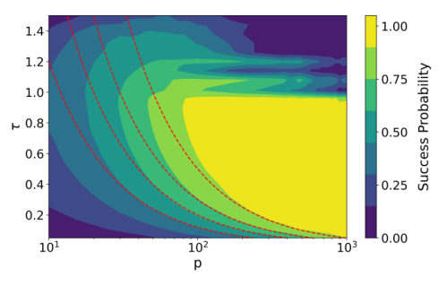
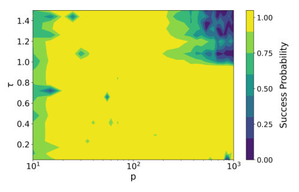
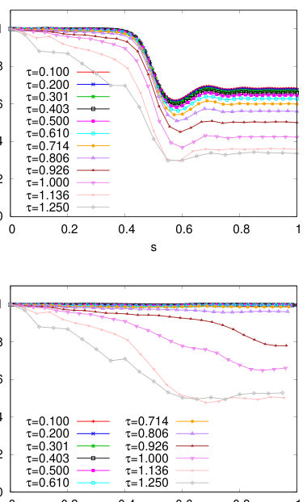
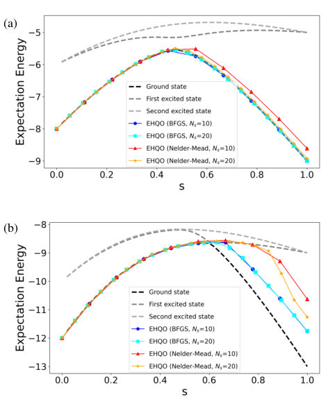
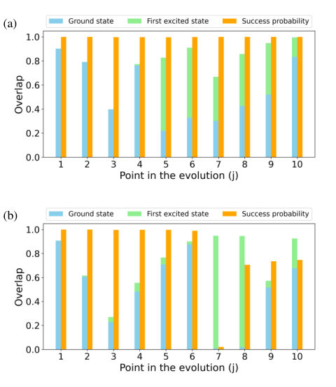
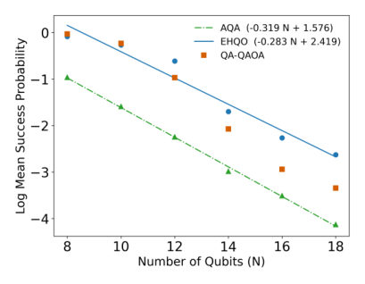
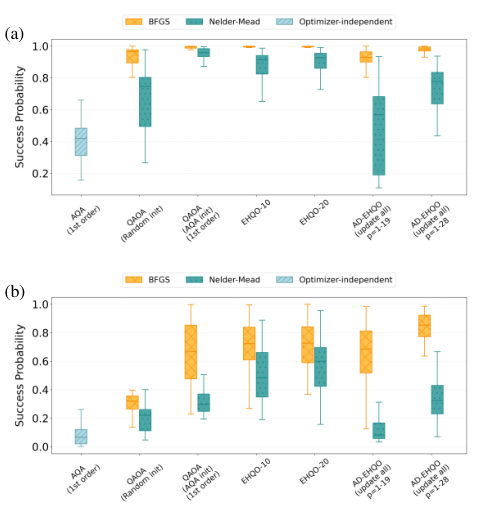
Main problem. The difficulty of implementing faithful Quantum Annealing on NISQ devices due to high circuit depth and noise, necessitating more resource-efficient, QA-inspired hybrid algorithms.
Main result. The study identifies that Approximate Quantum Annealing (AQA) parameters can serve as an effective warm start for QAOA, and introduces EHQO, a multi-step variational scheme that shows improved scaling and performance on hard 2-SAT instances.
Method. The authors use a discretized annealing ansatz (AQA) and a multi-step variational scheme (EHQO) based on the Suzuki-Trotter product formula, evaluated via numerical simulations on the JUQCS simulator.
Summary. This paper proposes new variational quantum algorithms inspired by the physics of quantum annealing to better suit the limitations of NISQ hardware. It introduces Approximate Quantum Annealing (AQA) to find efficient parameter regimes for QAOA initialization and presents Evolving Hamiltonian Quantum Optimization (EHQO) as a way to guide optimization through a sequence of intermediate Hamiltonians. Numerical tests on 2-SAT problems demonstrate that these methods can improve success probabilities and offer better scaling than standard QAOA. The work provides a practical strategy for leveraging annealing-like dynamics to enhance hybrid quantum-classical optimization.
Model / system. The study focuses on combinatorial optimization problems formulated as Ising Hamiltonians, specifically using ensembles of hard 2-SAT instances with 8 to 18 variables.
Key observables. Success probability (median and mean), expectation value of the Hamiltonian, and overlap with ground and excited states.
Important parameters / regimes. Trotterization time step (tau), number of layers (p), annealing schedule functions (A(s) and B(s)), and the number of intermediate steps (Ns).
Assumptions / limitations. The algorithms are evaluated on relatively small problem sizes (up to 18 qubits) and assume the availability of classical optimizers like BFGS.
Figures summary. Figure 1 shows a parameter scan of success probability vs. tau and p; Figure 4 shows expectation energy evolution during EHQO; Figure 5 illustrates state overlap loss during anti-crossings; Figure 6 compares success probabilities across algorithms; Figure 7 shows the scaling of success probability with problem size.
Paper structure. The paper introduces the problem of NISQ-era annealing, defines the AQA and EHQO algorithms, presents parameter scans to identify operational regimes, details the EHQO multi-step framework, provides numerical benchmarks on 2-SAT instances, and concludes with scaling analysis.
We study algorithms inspired by quantum annealing that are suited for the NISQ era. First, we analyze approximate quantum annealing (AQA), which employs a discretized annealing ansatz in which the time step and the number of layers are allowed to deviate from a faithful implementation of quantum annealing. Parameter scans identify regimes that reproduce annealing-like behavior with reduced resources, making them more suitable for NISQ devices. The resulting parameters can then be used as an effective warm start for the quantum approximate optimization algorithm (QAOA), improving its performance compared to random initializations. We also introduce evolving Hamiltonian quantum optimization (EHQO), a multistep variational scheme that guides the optimization process through intermediate Hamiltonians derived from the standard annealing Hamiltonian. Numerical simulations on sets of hard 2-SAT instances suggest that quantum annealing-inspired algorithms provide practical strategies for enhancing variational quantum optimization.
Authors: S. V. Dzhenzher
Type: theory · Category: other · PDF: https://arxiv.org/pdf/2604.25854v1
Analysis basis: full PDF text, analyzed in chunks
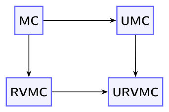
Main problem. The paper investigates the relationship between the properties of quantum states on infinite-dimensional Hilbert spaces and the set-theoretic existence of Ulam measurable cardinals.
Main result. The author proves that any sigma-additive state on the diagonal algebra is representable as a Pettis integral and constructs a quantum channel that maps normal states into a singular sigma-additive state, effectively archiving information in the singular sector.
Method. The study utilizes set-theoretic tools including sigma-complete ultrafilters and large cardinal axioms, alongside mathematical frameworks like the Pettis integral and Yosida-Hewitt decomposition.
Summary. This paper explores the mathematical intersection of quantum state theory and large cardinal axioms in set theory. It specifically looks at quantum states on infinite-dimensional Hilbert spaces where the dimension is an Ulam measurable cardinal. The author demonstrates how quantum channels can be constructed to move information from normal, local states into a 'singular' sector that is invisible to compact operators. This provides a formal mathematical framework for the concept of information archiving within the non-normal sector of a state space.
Model / system. The system consists of a Hilbert space l2(kappa) where kappa is an Ulam measurable cardinal, focusing on the diagonal algebra of operators and the distinction between normal and singular states.
Key observables. Projectors representing diagonal operators and the induced measures on the power set of the index set.
Important parameters / regimes. The cardinality kappa (specifically when it is an Ulam measurable cardinal) and the property of sigma-additivity.
Assumptions / limitations. The results assume the framework of ZFC set theory and the existence of large cardinals (Ulam measurable cardinals); the scope is restricted to the diagonal algebra D(H).
Figures summary. A diagram illustrating the hierarchical relationships between different types of large cardinals, such as Measurable, Ulam real-valued measurable, and Ulam measurable cardinals.
Paper structure. The paper begins by establishing the representation of states via Pettis integrals, moves to characterizing singular states through their induced measures, and concludes with the construction and analysis of a quantum channel that transforms normal states into singular states.
This paper investigates the interplay between the properties of quantum states on the Hilbert space \(\ell_2(κ)\) and the set-theoretic nature of the cardinal $κ$. We focus on the existence of singular $σ$-additive states~ -- functionals whose induced measures are $σ$-additive yet vanish on singletons. While the existence of such states is known to be equivalent to the Ulam measurability of $κ$, their structural and dynamical properties remain largely unexplored. We prove that any $σ$-additive state on the diagonal algebra is representable as a Pettis integral over a singular $σ$-additive measure, extending the classical representation theory to the non-normal sector. Furthermore, we construct a class of quantum channels using $σ$-complete ultrafilters that map normal states to singular $σ$-additive states, effectively <
Authors: Andreas Stergiou
Type: theory · Category: statistical mechanics · PDF: https://arxiv.org/pdf/2604.24840v1
Analysis basis: full PDF text, analyzed in chunks
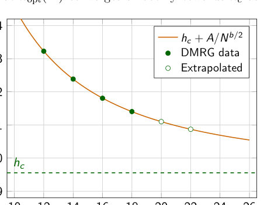
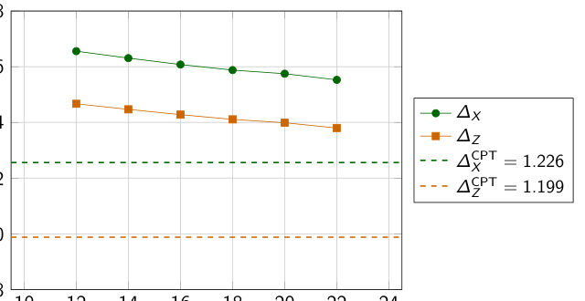
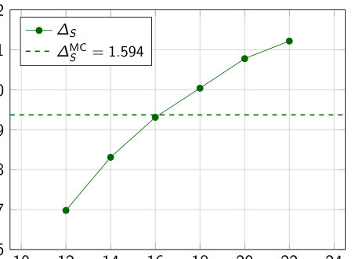
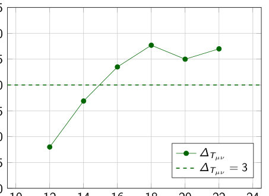
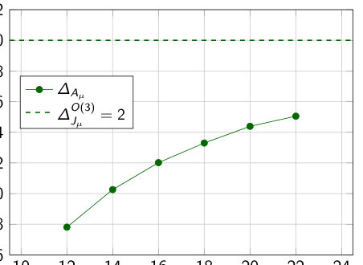
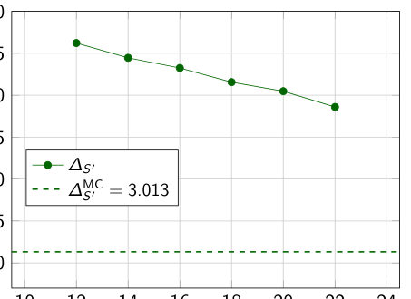
Main problem. The difficulty of non-perturbatively studying the 3D cubic conformal field theory (CFT) because its observables are numerically very close to the more symmetric O(3) model, making it hard to isolate the cubic fixed point.
Main result. The fuzzy sphere regularization successfully isolates the cubic critical point, demonstrating the lifting of degeneracy in the rank-two symmetric tensor and providing scaling dimensions consistent with Monte Carlo and conformal perturbation theory benchmarks.
Method. The study uses the fuzzy sphere regularization method combined with Exact Diagonalization (ED) and the Density Matrix Renimormalization Group (DMRG) implemented in the FuzzifiED Julia package.
Summary. This paper presents a method to study the 3D cubic conformal field theory by using a fuzzy sphere regularization to prevent the system from reverting to O(3) symmetry. By 'hard-coding' cubic symmetry into the Hamiltonian, the authors successfully isolate the cubic critical point. Using ED and DMRG, they calculate scaling dimensions that align with established Monte Carlo and conformal perturbation theory results. This demonstrates that the fuzzy sphere is a powerful tool for resolving closely spaced universality classes.
Model / system. A quantum rotor model on a fuzzy sphere, where the O(3) symmetric Hamiltonian is deformed by adding a cubic-invariant two-body interaction to break continuous rotational symmetry down to the cubic group (Oh).
Key observables. Scaling dimensions of key operators (scalar singlets, spin-one primary, and stress-energy tensor) and the splitting of the O(3) rank-two traceless symmetric tensor into Eg and T2g representations.
Important parameters / regimes. Moment of inertia (I), Heisenberg coupling (J), cubic anisotropy strength (w), and the kinetic energy tuning parameter (h).
Assumptions / limitations. The model uses a truncated rotor basis (l=0 and l=1 only), and results are subject to finite-size effects with non-rigorous thermodynamic limit extrapolations.
Figures summary. Figures show the finite-size dependence of operator dimensions, specifically the monotonic decrease of the S' operator dimension and the convergence of the X and Z operators.
Paper structure. The paper introduces the problem of symmetry enhancement, describes the fuzzy sphere construction and Hamiltonian deformation, details the numerical methods (ED and DMRG), presents the results for various operator dimensions, and compares them to existing benchmarks.
The three-dimensional cubic conformal field theory governs the critical behaviour of Heisenberg magnets with cubic anisotropy. Studying this theory non-perturbatively is challenging, because its most easily accessible observables are numerically very close to those of the more symmetric $O(3)$ model. In this work, we overcome this difficulty using the fuzzy sphere regularisation method. By adding a cubic-invariant two-body interaction to the quantum rotor Hamiltonian used for the $O(3)$ model, we break the continuous rotational symmetry by construction and unambiguously isolate the cubic critical point. Using exact diagonalisation and the density matrix renormalisation group, we calculate the scaling dimensions of several key operators, including the leading scalar singlets, and resolve the splitting of the $O(3)$ rank-two traceless symmetric tensor into the $E_g$ and $T_{2g}$ representations of the cubic group. Our results are consistent with existing Monte Carlo, conformal perturbation theory, and $\varepsilon$ expansion benchmarks, demonstrating the power of the fuzzy sphere in resolving closely spaced universality classes.
Authors: Rajdeep Dwivedi, C. A Jothishwaran, Sugata Gangopadhyay, Vishvendra Singh Poonia
Type: theory · Category: quantum information and computing · PDF: https://arxiv.org/pdf/2604.25503v1
Analysis basis: full PDF text, analyzed in chunks
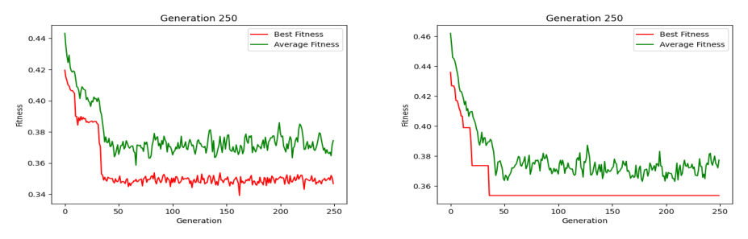
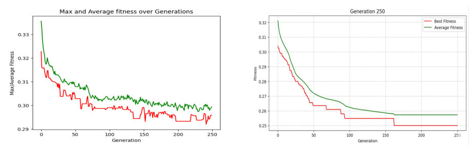
Main problem. Finding bent Boolean functions, which are maximally nonlinear and resistant to affine approximation, is computationally hard for large numbers of variables due to the exponential cost of evaluating fitness metrics.
Main result. The authors demonstrate a quantum-accelerated genetic algorithm that uses a quantum circuit to evaluate the Gowers U2 norm, providing a superpolynomial complexity advantage for n > 25.
Method. A hybrid quantum-classical genetic algorithm (GA) is proposed, utilizing a 3n-qubit quantum circuit as an evolutionary fitness function to estimate the Gowers U2 norm.
Summary. This paper presents a hybrid quantum-classical genetic algorithm designed to find bent Boolean functions more efficiently than classical methods. By using a quantum circuit to evaluate the Gowers U2 norm, the authors show that the computational cost can be reduced from exponential to polynomial for large numbers of variables. The study validates that this quantum-assisted approach can successfully navigate the search space to reach theoretical optimality. This provides a clear roadmap for using future fault-tolerant quantum computers to solve hard combinatorial optimization problems in Boolean algebra.
Model / system. The study focuses on Boolean functions f: F2^n -> F2 and uses a quantum circuit model with three n-qubit registers (X, A, B) and a phase-oracle Uf to encode function values as phases.
Key observables. Gowers U2 norm (fitness metric), Walsh-Hadamard spectral flatness, and the bent threshold (2^-n/4).
Important parameters / regimes. Number of variables (n=6, n=8), crossover point (n approx 25), number of shots (M=1000), and mutation rate (pm=0.8).
Assumptions / limitations. The performance advantage assumes the availability of fault-tolerant quantum hardware and is subject to finite-sampling (shot) noise.
Figures summary. Figure 1 shows the fitness evolution for n=6, illustrating convergence and the impact of shot noise; Figure 2 shows the fitness evolution for n=8, demonstrating the classical GA reaching the exact theoretical threshold.
Paper structure. The paper introduces the problem of bent function construction, proposes a hybrid quantum-classical GA, provides a complexity analysis comparing quantum and classical scaling, validates the method via simulations for n=6 and n=8, and discusses future extensions to larger n and higher-order norms.
Bent Boolean functions extremal objects that maximally resist affine approximation are notoriously hard to construct for large numbers of variables. We propose a hybrid quantum-classical genetic algorithm (GA) that uses a \emph{quantum circuit} to evaluate the Gowers $U_2$ norm as the evolutionary fitness function. Our central contribution is a complexity-theoretic separation: the quantum evaluation circuit requires only $3n$ qubits and $\bigO(n^2)$ two-qubit gates per function query, whereas the classical computation of the exact Gowers $U_2$ norm demands $\bigO(2^{2n})$ arithmetic operations an exponential overhead that renders it infeasible for $n \gtrsim 25$. We validate the framework on $n=6$ and $n=8$ variable systems. For $n=8$, our classical GA run extended to 1000 generations achieves best fitness $\Utwof = 0.250000$ \emph{exactly} the theoretical bent threshold $2^{-n/4}$ with average fitness $0.257267$, confirming that the Gowers $U_2$ norm is a superior fitness criterion over Walsh-Hadamard spectral flatness. Quantum-assisted evaluation faithfully reproduces the classical trajectory up to finite-sampling noise, and our complexity analysis demonstrates that for $n > 25$ the quantum evaluator provides a decisive computational advantage on fault-tolerant hardware.
Authors: P. Beretta, A. Codello
Type: theory · Category: statistical mechanics · PDF: https://arxiv.org/pdf/2604.25103v1
Analysis basis: full PDF text, analyzed in chunks
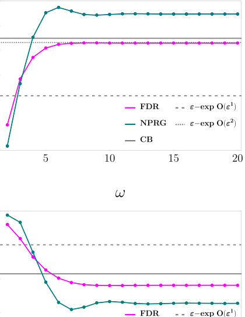
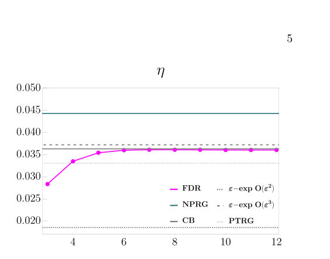
Main problem. The paper addresses the limitations of the standard epsilon-expansion in critical phenomena and the scheme dependencies/complexities introduced by mass cutoffs in existing functional Renormalization Group (RG) frameworks.
Main result. The authors propose a new 'Functional Dimensional Regularization' (FDR) scheme that combines the agility of DR with the generality of functional RG, achieving faster convergence and critical exponent estimates that rival or exceed state-of-the-art methods.
Method. The FDR method constructs beta functions by summing DR beta functions over all critical dimensions (d_c = 0, 2, 4, ...), effectively treating all poles in the complex d-plane as fundamental to the flow.
Summary. This paper introduces Functional Dimensional Regularization (FDR), a new renormalization group scheme for studying critical phenomena. By summing dimensional regularization beta functions over all critical dimensions, the authors create a method that avoids the need for explicit mass cutoffs. The FDR approach shows remarkable accuracy in calculating critical exponents for the 3D Ising model, even at low orders of approximation. It effectively bridges the gap between the simplicity of the epsilon-expansion and the power of functional RG.
Model / system. The study focuses on scalar field theory (specifically lambda-phi^4 theory) and its application to the Ising universality class and Wilson-Fisher fixed point in three dimensions.
Key observables. Critical exponents (nu, omega, eta), RG spectrum (scaling dimensions/eigenvalues), and beta functions.
Important parameters / regimes. Dimension d, coupling constants (lambda_2, lambda_4, lambda_6, ...), and the DR mass scale mu.
Assumptions / limitations. The current analysis is primarily restricted to one-loop master formulas and focuses on even couplings to avoid complexity; the method is tested via the Local Potential Approximation (LPA) and derivative expansions.
Figures summary. Figure 1 compares convergence of critical exponents; Figure 3 and 4 illustrate the Feynman diagrams contributing to the standard two-loop DR flow versus the one-loop FDR flow.
Paper structure. The paper introduces the limitation of existing RG methods, proposes the FDR framework, demonstrates its mathematical construction via summing critical dimensions, validates it by reproducing known epsilon-expansion results, and compares its convergence and accuracy against NPRG and Conformal Bootstrap methods.
We show that it is possible to use dimensional regularization (DR) beyond the usual $\varepsilon$-expansion in the context of renormalization group (RG) calculations in Critical Phenomena. Based on this fact, we propose a new functional RG scheme - Functional Dimensional Regularization (FDR) - and apply it to a scalar theory in three dimensions. We compute the critical exponents of the Ising universality class directly in $d=3$ under various typical approximations. The method that emerges combines the agility typical of DR with the generality proper of functional RG. Moreover, at a given order of approximation, FDR seems to provide faster convergence and better estimates than other functional RGs.
Authors: Yoichi Ishiwata, Ichidai Harada, Masaki Imamura, Kazutoshi Takahashi, Hirofumi Ishii, Masato Yoshimura, Nozomu Hiraoka, Yuji Inagaki, Kenta Akashi, Tatsuya Kawae, Tetsuya Kida, Masashi Nantoh
Type: experiment · Category: strongly correlated electrons · PDF: https://arxiv.org/pdf/2604.25488v1
Analysis basis: full PDF text, analyzed in chunks
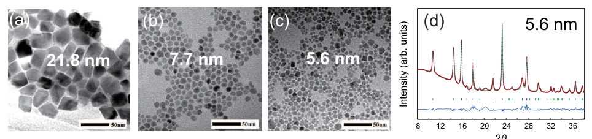
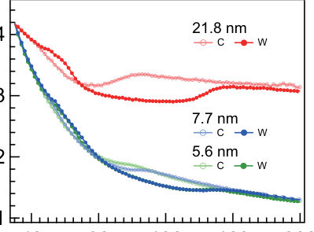
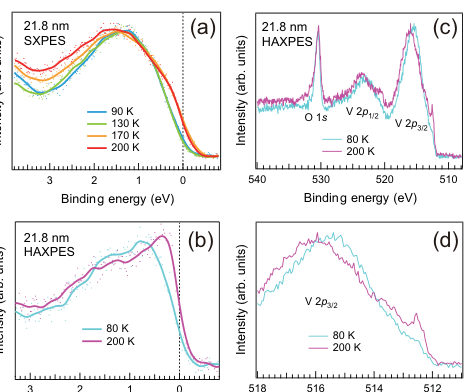
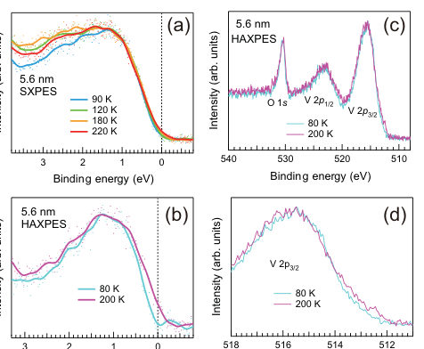
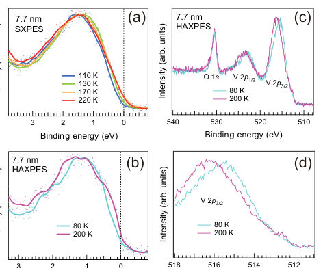
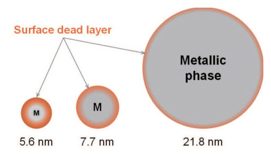
Main problem. Investigating whether the metal-insulator transition (MIT) in Cr-doped V2O3 nanocrystals is intrinsically suppressed by extreme size reduction or if it persists in the particle interior despite the growth of an insulating surface dead-layer.
Main result. The MIT persists down to an average particle size of 5.6 nm, with the transition occurring in the nanocrystal interior while an insulating surface dead-layer grows and suppresses quasiparticle weight as size decreases.
Method. The study uses synchrotron-based photoemission spectroscopy (SXPES for surface sensitivity and HAXPES for deep probing) combined with magnetic susceptibility measurements and structural characterization (TEM, XRD).
Summary. This study examines the stability of the Mott metal-insulator transition in Cr-doped V2O3 nanocrystals as they are scaled down to the sub-10-nm regime. By comparing surface-sensitive and deep-probing photoemission spectroscopy, the researchers found that while an insulating 'dead-layer' grows at the surface as particles shrink, the metallic phase persists in the nanocrystal interior. The results show that the fundamental limit for the transition is approximately 5 nm, though the shrinking conductive core poses practical challenges for electronic device applications.
Model / system. The physical system consists of Cr-doped V2O3 nanocrystals with average particle sizes of 5.6 nm, 7.7 nm, and 21.8 nm, modeled as a two-layer system with an insulating surface dead-layer surrounding a metallic core.
Key observables. Transition temperature (T_MIT), magnetic susceptibility (chi), quasiparticle (QP) weight, and spectral weight near the Fermi level.
Important parameters / regimes. Particle sizes (5.6 nm to 21.8 nm), probing depths (1.1 nm for SXPES and 7.8 nm for HAXPES), and a fundamental size limit of approximately 5 nm.
Assumptions / limitations. The thickness of the effective surface layer may be influenced by local surface morphology, and the transition is discussed within the context of the Mott criterion.
Figures summary. Fig 1 shows TEM images and XRD patterns for size characterization; Fig 2 displays temperature-dependent magnetic susceptibility showing the transition near 155 K; Fig 3 shows valence-band spectra comparing SXPES and HAXPES.
Paper structure. The paper introduces the problem of nanoscaling in Mott systems, describes the synthesis and characterization of V2O3 nanocrystals, presents magnetic and spectroscopic evidence for the persistence of the MIT, discusses the growth of the surface dead-layer, and concludes with the implications for device miniaturization.
We investigated the size dependence of the metal-insulator transition (MIT) in Cr-doped V2O3 nanocrystals by photoemission spectroscopy using complementary probing depths, together with magnetic susceptibility measurements. Photoemission spectra show that MIT signatures persist down to an average particle size of 5.6 nm, and magnetic susceptibility measurements exhibit a nearly size-invariant transition onset. The contrast between surface-sensitive and deeper-probing photoemission spectra reveals that the transition survives in the nanocrystal interior. At the same time, the spectra indicate a systematic suppression of coherent quasiparticle weight with decreasing size, pointing to the growth of an insulating surface dead layer. These results demonstrate that nanoscaling does not intrinsically eliminate the MIT itself, but progressively enhances the influence of surface-driven insulating behavior, thereby providing insight into the practical limits of miniaturizing Mott-based devices.
Authors: Takiko Sasaki, Tetsuji Tokihiro
Type: theory · Category: quantum information and computing · PDF: https://arxiv.org/pdf/2604.25494v1
Analysis basis: full PDF text, analyzed in chunks
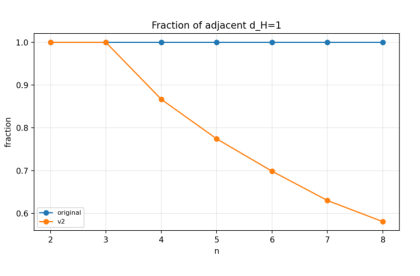
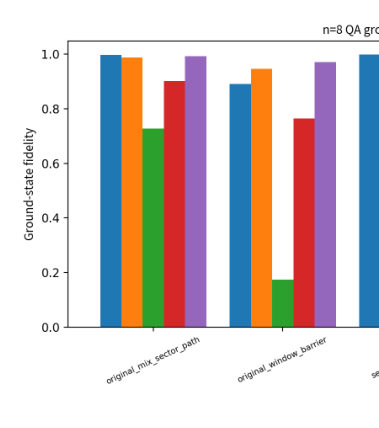
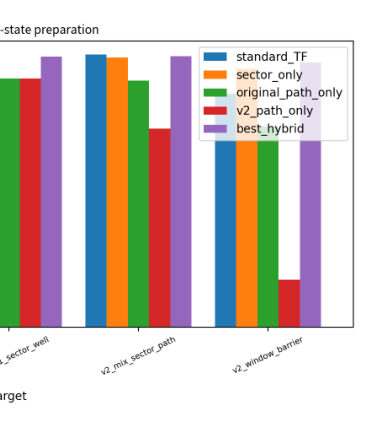
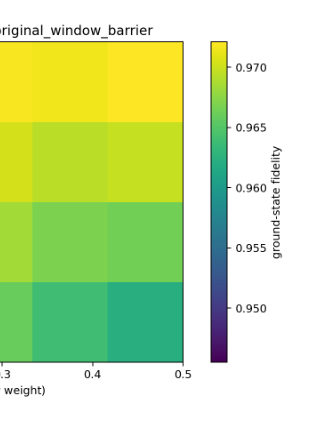
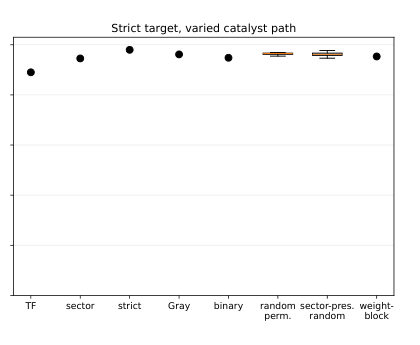
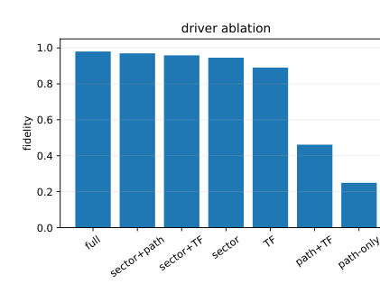
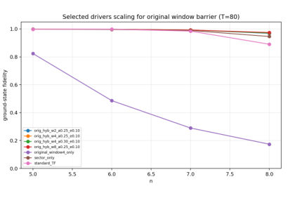
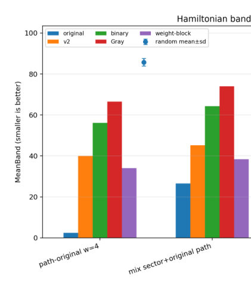
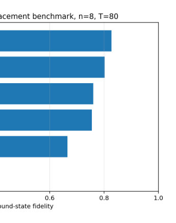
Main problem. Designing problem-dependent, graph-local adiabatic drivers to improve ground-state preparation fidelity in quantum annealing on Boolean hypercubes.
Main result. A hybrid driver combining sector, path-window, and transverse-field components significantly improves fidelity for non-diagonal target Hamiltonians aligned with the driver's geometry, though it provides no advantage for standard diagonal-cost annealing.
Method. Numerical simulations of the time-dependent Schrodinger equation using finite-size studies (up to n=8) and ablation controls to identify the roles of different driver components.
Summary. This paper investigates how to design specialized 'drivers' for quantum annealing that are tailored to the specific structure of a problem. By using a hybrid approach that combines Hamming-weight sectors with specific path-window coordinates, the authors show they can significantly improve the success rate of finding ground states for certain classes of non-diagonal Hamiltonians. While not a universal solution for all quantum annealing problems, it provides a design principle for using graph-local information to guide quantum dynamics.
Model / system. Quantum annealing on an n-dimensional Boolean hypercube using a time-dependent Hamiltonian consisting of a hybrid driver and a non-diagonal target Hamiltonian with path-window barrier structures.
Key observables. Ground-state preparation fidelity, energy residual, minimum spectral gap, and MeanBand (matrix bandwidth metric).
Important parameters / regimes. Number of qubits (n up to 8), annealing time (T), driver window width (w), and mixing parameters (alpha, epsilon).
Assumptions / limitations. The study is limited to finite-size systems (n <= 8) and the effectiveness is conditional on the target Hamiltonian's geometry being aligned with the driver's coordinates.
Figures summary. Boxplots comparing different path-order controls, ablation studies showing the necessity of each driver component, and performance comparisons for sensor-placement benchmarks.
Paper structure. The paper introduces the sector/path coordinate construction, presents numerical experiments on fidelity and spectral gaps, performs ablation studies to isolate driver mechanisms, and concludes with validation via specific benchmark problems.
We study finite-size adiabatic state preparation on Boolean hypercubes using graph-local drivers built from sector/path coordinates related to monotone Gray-code representatives. The construction is not presented as a new all-$n$ Gray-code existence theorem; rather, it provides finite representatives, explicitly checked through the cases used in the numerical experiments, for testing problem-dependent graph-local drivers. For ordinary diagonal-cost transverse-field annealing, the ordering does not yield a robust advantage, and we include this negative result as a baseline. For non-diagonal target Hamiltonians whose geometry is expressed in the same sector/path coordinates, hybrid drivers combining sector, path-window, and small transverse-field components can substantially improve the final ground-state fidelity in centered barrier instances. Reproduction runs from the accompanying code confirm a representative centered original-window barrier value of approximately \(0.9799\) for the fixed-control hybrid parameters \((w,α,ε)=(8,0.50,0.15)\), while also showing that the improvement is target-class dependent. Randomized and ablation controls indicate that the dominant contribution is the sector-preserving skeleton, with strict one-bit completion acting as a secondary refinement. We provide code, finite certificates, CSV files, validation logs, and reproduction scripts to make the finite-size claims traceable.
Authors: Munkhorgil Wang, Ming Wen, Pavel Pokhilko, Chia-Nan Yeh, Miguel A. Morales, Dominika Zgid
Type: theory · Category: numerical methods · PDF: https://arxiv.org/pdf/2604.25581v1
Analysis basis: full PDF text, analyzed in chunks
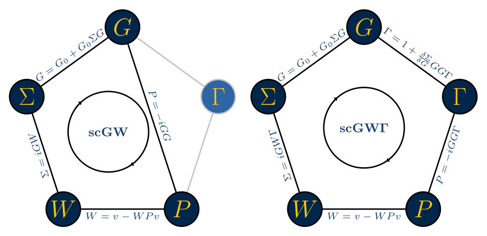
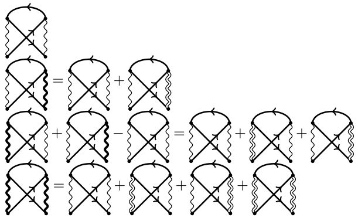
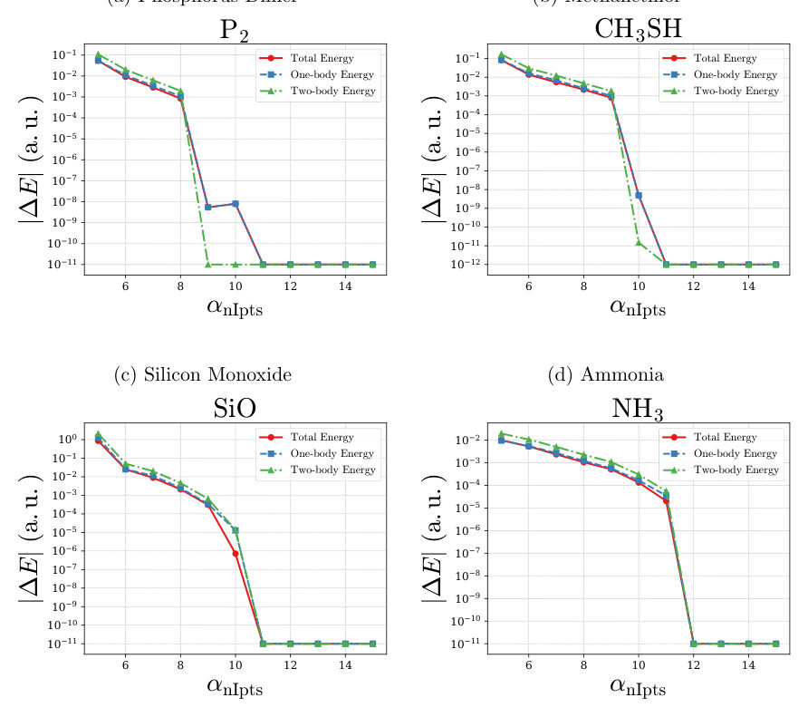
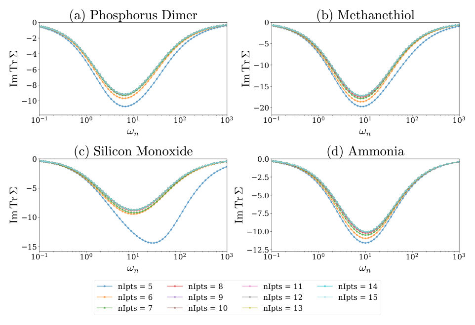
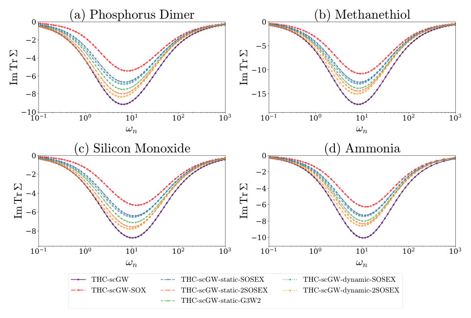
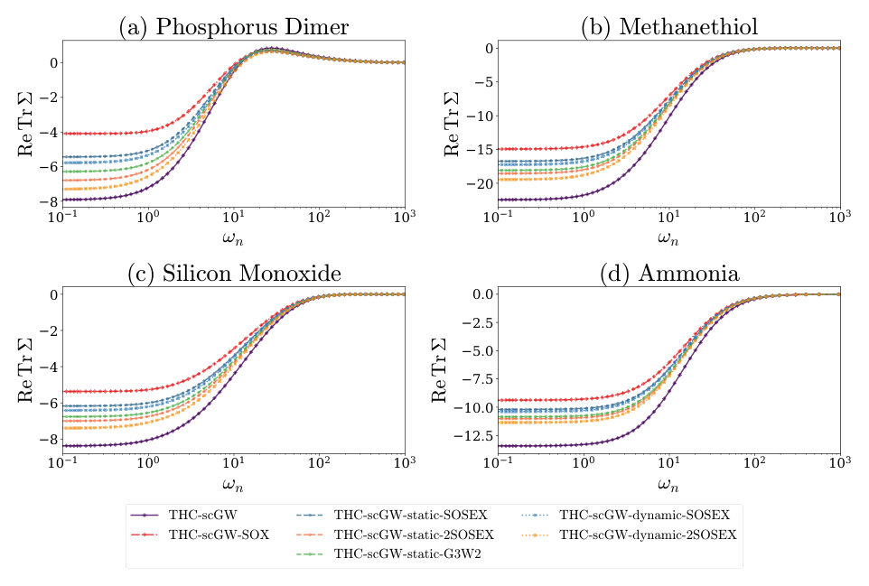
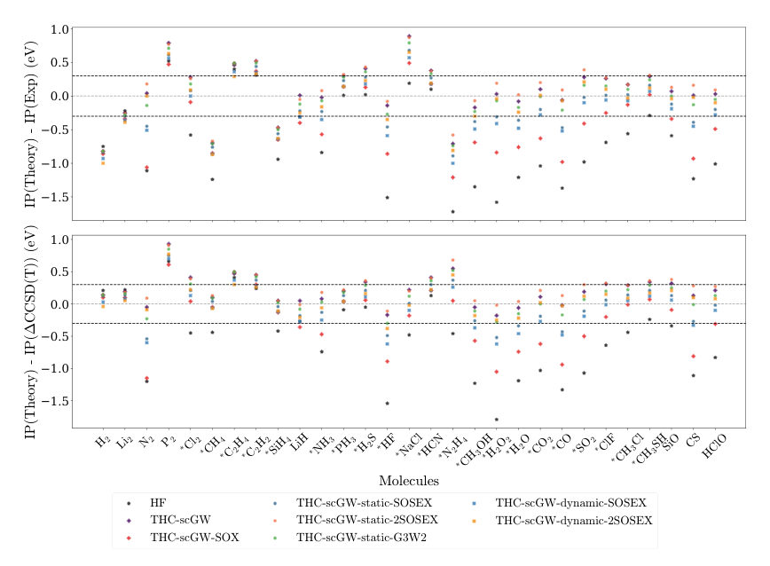
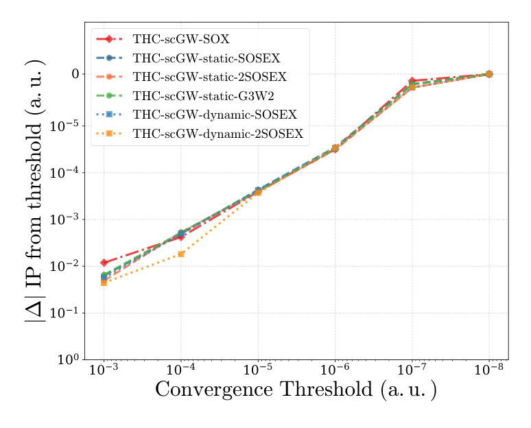
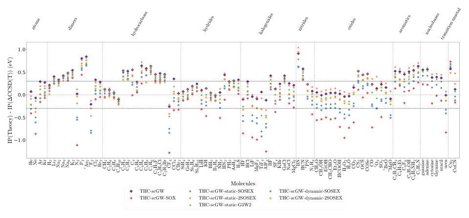
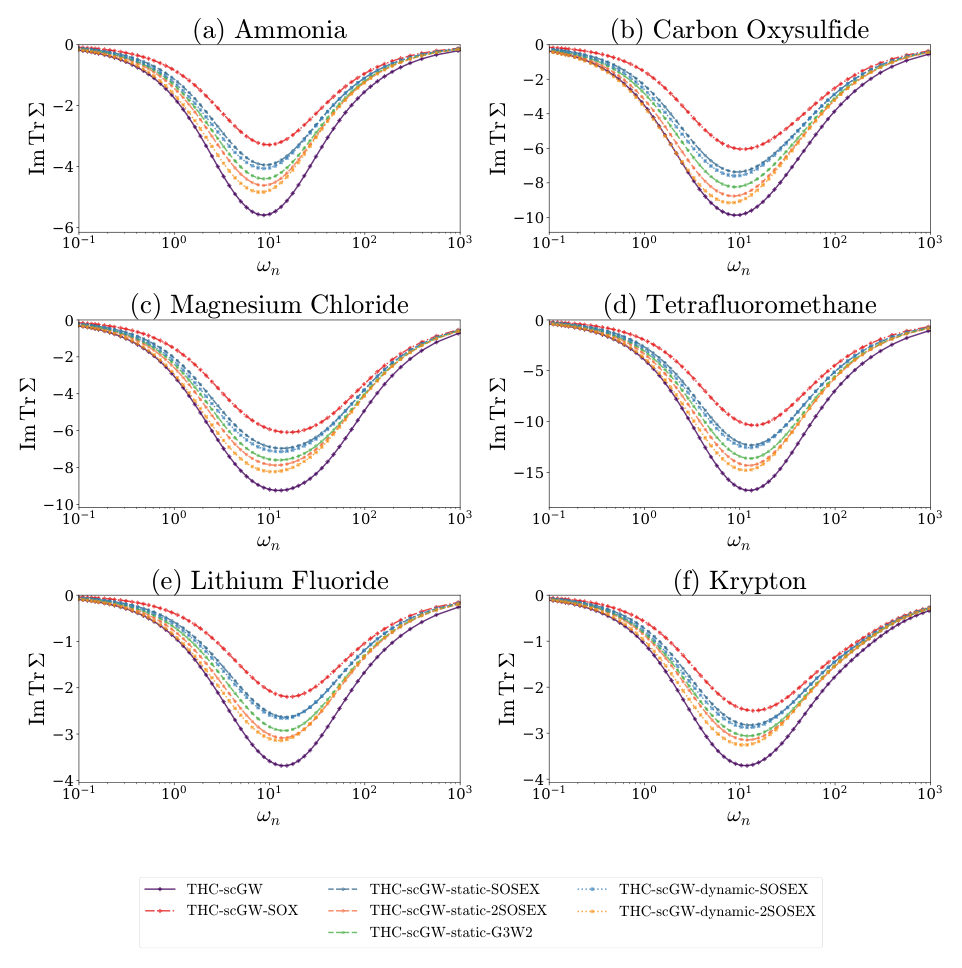
Main problem. The high computational cost of implementing fully self-consistent vertex-corrected GW (scGWGamma) methods for realistic molecular systems and the need to evaluate if Tensor Hypercontraction (THC) can accelerate these calculations without introducing significant errors.
Main result. THC decomposition introduces negligible errors into scGW ionization potentials, proving it is a reliable acceleration route, though vertex corrections primarily cause systematic shifts in IPs rather than consistent accuracy improvements.
Method. Self-consistent GW (scGW) and vertex-corrected scGWGamma using Tensor Hypercontraction (THC) for acceleration, incorporating various vertex approximations like SOX, SOSEX, and G3W2.
Summary. This paper evaluates the use of Tensor Hypercontraction (THC) to accelerate expensive self-consistent GW calculations with vertex corrections. The authors demonstrate that THC provides a reliable way to reduce computational scaling without sacrificing the accuracy of molecular ionization potentials. They also find that while vertex corrections are important, they often result in systematic shifts in energy values rather than simple accuracy improvements. This work identifies THC as a key enabling technology for applying high-level many-body perturbation theory to larger molecular systems.
Model / system. Small molecular systems benchmarked using the G0W0Gamma and GW100 datasets, treated within a many-body Green's function framework using the Luttinger-Ward formulation in a grand-canonical ensemble.
Key observables. Molecular first ionization potentials (IPs), electron affinities (EAs), and total electronic energy decomposition (one-body and two-body contributions).
Important parameters / regimes. Interpolation-point ratio (alpha_Ipts), frequency grids (real vs. imaginary axis), temperature (beta), and chemical potential (mu).
Assumptions / limitations. The study assumes the validity of the THC decomposition for the dynamic part of the self-energy and focuses on vertex corrections applied only to the self-energy level while keeping polarization at the GW level.
Figures summary. Figure 1 illustrates Hedin's equations; Figure 3 shows logarithmic plots of energy convergence as a function of the THC interpolation-point ratio.
Paper structure. The paper introduces the computational challenge of vertex corrections, establishes the mathematical framework of many-body perturbation theory, details the THC acceleration technique and various vertex approximations, presents benchmark results on molecular datasets, and discusses convergence and error analysis.
Why it may be interesting. The development of efficient numerical scaling via THC for many-body Green's function methods is highly relevant to the advancement of large-scale classical simulations of many-body dynamics and electronic correlations.
In this work, we benchmark tensor hypercontraction (THC)-accelerated fully self-consistent $GW$ (sc$GW$) and vertex-corrected self-consistent $GW$ (sc$GWΓ$) methods for predicting molecular first ionization potentials (IPs). The vertex function, $Γ$, is inserted into the self-energy in a fully self-consistent manner, and representative sc$GW$ and sc$GWΓ$ variants are assessed across the $G_0W_0\Gamma29$ and $GW100$ data sets. We find that the THC decomposition introduces negligible errors into self-consistent $GW$ ionization potentials, indicating that the acceleration preserves the underlying fully self-consistent results. Across both benchmark sets, vertex-corrected sc$GWΓ$ methods primarily produce systematic shifts in the IPs relative to sc$GW$ rather than consistent accuracy improvements. These results identify THC as a reliable route to lower-cost sc$GW$ and sc$GWΓ$ calculations
Authors: Jack Weinberg, Narayanan Rengaswamy
Type: theory · Category: quantum information and computing · PDF: https://arxiv.org/pdf/2604.25042v1
Analysis basis: full PDF text, analyzed in chunks
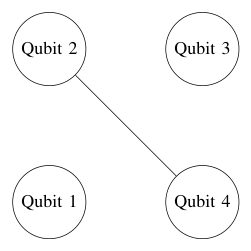
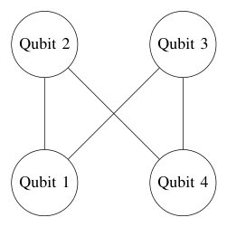
Main problem. How to compile arbitrary logical quantum gates on hardware with restricted connectivity and limited accessible Hamiltonians by leveraging the redundancy of error-correcting codes.
Main result. The authors provide a closed-form solution to the compilation problem by formulating it as a least-squares optimization over the stabilizer subalgebra, allowing for the selection of physical Hamiltonians that are easier to implement.
Method. The problem is reduced to a least-squares minimization problem using the Moore-Penrose pseudoinverse within the framework of Lie algebra (su(N)) and the adjoint action.
Summary. This paper presents a novel method for quantum compilation that utilizes the redundancy in error-correcting codes to find physical implementations of logical gates that respect hardware constraints. By treating the choice of stabilizer as a least-squares optimization problem, the authors show how to avoid expensive operations like SWAP gates by instead using naturally accessible physical Hamiltonians. The framework is general for any unitary in the SU(N) group and provides a mathematically precise way to bridge the gap between logical algorithms and physical hardware connectivity.
Model / system. The framework applies to quantum error-correcting codes (specifically the [[4, 2, 2]] code) and hardware architectures with restricted connectivity, such as superconducting, trapped ion, or neutral atom platforms.
Key observables. The distance (error) between the target logical Hamiltonian and the accessible physical Hamiltonian, and the fidelity of the implemented unitary.
Important parameters / regimes. The connectivity graph of the hardware, the specific error-correcting code used, and the set of accessible Lie algebra generators.
Assumptions / limitations. The method assumes a fixed error-correcting code and encoding circuit, a predefined set of accessible Hamiltonians, and that the hardware allows for the implementation of the resulting physical Hamiltonian.
Figures summary. Figure 1 shows a toy connectivity graph used for the CNOT implementation example; Figure 2 displays a non-trivial connectivity graph for a 4-qubit system.
Paper structure. The paper introduces the dual problem of fault-tolerance and compilation, develops a mathematical framework using Lie theory to define logical and stabilizer subalgebras, formulates the compilation as a least-squares optimization, provides a closed-form solution via the pseudoinverse, and demonstrates the approach using the [[4, 2, 2]] code.
To implement quantum algorithms on a quantum computer, we must overcome the twin problems of fault-tolerance -- how can we realize a relatively noiseless computation by cleverly combining noisy components? -- and compilation -- how can we realize an arbitrary quantum algorithm given the basic operations available on the quantum device at hand? We show how treating the former problem via error-correcting codes enables greater flexibility in resolving the latter. Specifically, we explicitly leverage the fact that error-correcting codes introduce redundancy which renders physically distinct operators logically indistinguishable. In terms of computation, it suffices to implement any operator logically equivalent to some target, yet from a compilation perspective, certain choices may be preferable to others. Our novel contribution is making this intuition precise in the general setting of the special unitary group. In particular, we describe how to reduce the problem of making a compilation-ideal choice to a least squares problem and provide a closed form solution thereof. Using our framework, it is possible to circumvent inserting costly swaps to adhere to hardware connectivity; instead, we could realize the logical target through a distinct physical Hamiltonian that is natively accessible. We elucidate our approach using the $[[4,2,2]]$ code. We discuss connections to compressed sensing that may pave the way to efficient compilation leveraging physical degrees of freedom.
Authors: Minghuan Zeng, Zheng Qin, Ling Qin, Shiping Feng, Lin Wu, Dong-Hui Xu, Rui Wang
Type: theory · Category: strongly correlated electrons · PDF: https://arxiv.org/pdf/2604.25537v1
Analysis basis: full PDF text, analyzed in chunks
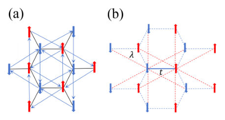
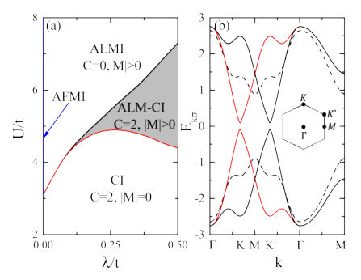
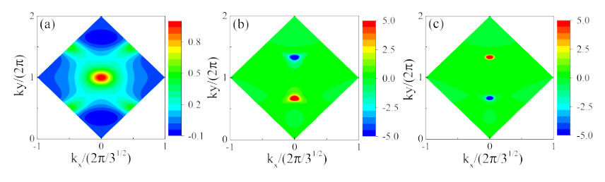
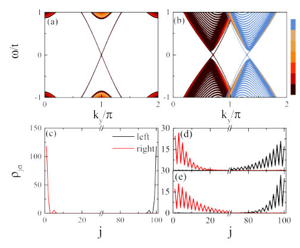
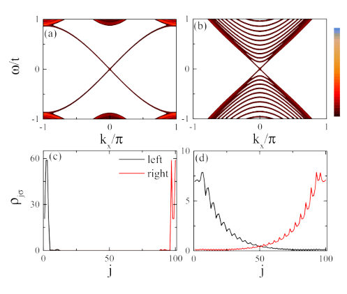
Main problem. The study investigates how odd-parity altermagnetism (ALM) reconstructs the momentum-space topology, edge states, and Hall transport in the presence of electronic interactions in a Chern insulator.
Main result. The transition from a conventional Chern-insulating phase to an ALM-induced phase redistributes Berry curvature and alters edge state symmetry without changing the total Chern number, while maintaining quantized low-frequency Hall conductivity.
Method. The authors employ the cluster slave-spin method, utilizing a 2-site cluster with exact diagonalization and a mean-field decoupling approach to treat strong electronic correlations.
Summary. This paper explores how odd-parity altermagnetism affects the topological properties of the Haldane-Hubbard model. It demonstrates that while the global Chern number remains invariant during the transition to an altermagnetic Chern-insulating phase, the local Berry curvature is significantly redistributed. This reconstruction leads to spin-valley-locked edge states in zigzag ribbons and specific signatures in the optical Hall response. The findings establish the Haldane-Hubbard model as a key platform for studying the interplay of symmetry, interactions, and topology.
Model / system. The Haldane-Hubbard model on a hexagonal lattice, which includes nearest-neighbor hopping, next-nearest-neighbor Haldane hopping, and onsite Coulomb repulsion.
Key observables. Berry curvature, edge state spectra (zigzag and armchair ribbons), Chern number, and optical conductivity (longitudinal and transverse).
Important parameters / regimes. Hubbard interaction strength (U), Haldane hopping (lambda), and chemical potential (mu).
Assumptions / limitations. The use of a 2-site cluster slave-spin approximation and a mean-field treatment for the coupling between the cluster and its environment.
Figures summary. Fig 1 shows the HH model ground state and the slave-spin approximation scheme; Fig 2 presents the phase diagram and spinon energy dispersion; Fig 3 illustrates spin-resolved Berry curvature across different interaction regimes; Fig 4 details the evolution of zigzag edge spectra and LDOS.
Paper structure. The paper introduces the problem of odd-parity ALM in correlated phases, describes the HH model and slave-spin method, presents the phase diagram and Berry curvature redistribution, analyzes edge state evolution in different ribbon geometries, discusses optical response, and concludes with experimental implications.
Odd-parity altermagnetism(ALM) extends compensated collinear magnetism beyond the even-parity spin splitting of conventional altermagnets, but its role in correlated topological phases remains largely unexplored. Using the cluster slave-spin method, we show that the odd-parity ALM appearing in the ALM Chern-insulating phase of Haldane-Hubbard model significantly reconstructs the local topology in the conventional Chern-insulating phase, while the total Chern number remains unchanged compared to the Chern-insulating phase. The Berry curvature becomes spin and valley selective; zigzag ribbons develop chiral-symmetry-breaking edge states; while armchair ribbons remain inversion symmetric. The optical response mirrors this separation between the local reconstruction and the global topology: low-energy spectra are governed by quasiparticles near the gap, whereas the low-frequency Hall conductivity stays quantized, $σ_{\rm T\uparrow}(Ω\to 0)=σ_{\rm T\downarrow}(Ω\to 0)=e^2/h$. These results establish the Haldane-Hubbard model as a minimal correlated platform for odd-parity altermagnetic topology.
Authors: Alexander Altland, Tobias Micklitz, Devasheesh Sharma, Maksimilian Usoltcev, Carolin Wille
Type: theory · Category: disordered systems and neural networks · PDF: https://arxiv.org/pdf/2604.24917v1
Analysis basis: full PDF text, analyzed in chunks
Main problem. Developing a unified theoretical framework for Anderson localization on the hyperbolic plane that interpolates between 2D-like behavior at short scales and infinite-dimensional behavior at large scales.
Main result. The derivation of a two-parameter renormalization group flow for conductivity and curvature, identifying a critical line (separatrix) that separates metallic and insulating phases.
Method. A combination of a non-linear sigma-model using the supersymmetry formalism, renormalization group analysis, and lattice discretization using Poisson-Delaunay random graphs.
Summary. This paper provides a complete theory of Anderson localization on a surface with negative curvature. It explains how the geometry of the hyperbolic plane causes a crossover from standard 2D localization to a high-dimensional regime where metallicity can be protected. By using both field theory and graph-based models, the authors derive a unified renormalization group flow that predicts a true phase transition between metallic and insulating states.
Model / system. The two-dimensional hyperbolic plane (H2) with constant negative curvature, modeled via a Hamiltonian with a delta-correlated random potential and discretized using various graph structures like Bethe lattices and Poisson-Delaunay graphs.
Key observables. Scale-dependent conductivity (sigma), scale-dependent curvature (u), resistance (R), and critical exponents (nu and beta).
Important parameters / regimes. Disorder strength (W), curvature radius (L), conductivity (sigma), and the scaling variable (u).
Assumptions / limitations. One-loop approximation in the renormalization group integration; use of a delta-correlated random potential; assumption that the Poisson-Delaunay discretization accurately captures the continuum spectrum in the high-density limit.
Figures summary. Figure 4 shows a generation of a cactus graph; Figure 5 is mentioned in the context of discretization/graph properties.
Paper structure. The paper begins with a continuum sigma-model to establish the 2D-like localization physics, moves to a lattice discretization (Bethe lattice and random graphs) to capture the high-dimensional transition, and concludes by deriving the coupled RG flow equations and the critical line.
The two-dimensional hyperbolic plane, $\mathbb{H}^2$, is an unusual system in that dimensionality changes with scale: locally two-dimensional and planar at short distances, but effectively infinite-dimensional at large scales, it provides an interesting paradigm for the study of (quantum) phase transitions, notably the disorder-driven Anderson transition. Generalizing previous work, which treated short and large distance scales separately, we develop a unified framework interpolating between the principles of low- and high-dimensional Anderson localization. As a main result, we derive a two-parameter flow in a plane spanned by scale-dependent curvature (setting the system's effective dimensionality) and conductivity, with an extended critical line separating metallic and insulating phases.
Authors: Michal Vališka, Tetiana Haidamak, Andrej Cabala, Petr Proschek, Andreas Hausprug, Sergei Zherlitsyn, Vladimír Sechovský
Type: experiment · Category: strongly correlated electrons · PDF: https://arxiv.org/pdf/2604.25896v1
Analysis basis: full PDF text, analyzed in chunks
Main problem. The existence of an unresolved internal superconducting phase boundary in UTe2 for magnetic fields along the b-axis lacked definitive bulk thermodynamic evidence.
Main result. Ultrasound measurements provide the first bulk thermodynamic evidence for this internal phase boundary, identifying a tetracritical point near 13.5 T and 1.25 K and revealing symmetry-selective coupling to lattice strain.
Method. Pulse-echo ultrasound spectroscopy of various elastic modes (C33, C44, C55) and transverse magnetostriction measurements.
Summary. This paper provides the first thermodynamic confirmation of an internal superconducting phase boundary in UTe2 for magnetic fields applied along the b-axis. Using ultrasound spectroscopy, the authors observed a significant softening in the C33 elastic mode and a kink in magnetostriction at approximately 14 T. They identified a tetracritical point where the phase boundary terminates and demonstrated that the anomaly is symmetry-selective. This discovery confirms the boundary is a bulk thermodynamic feature and supports the existence of multicomponent superconductivity in this material.
Model / system. The physical system is UTe2, an orthorhombic heavy-fermion paramagnet and unconventional superconductor, studied in high magnetic fields (up to 18 T) and low temperatures (down to 0.33 K).
Key observables. Elastic constants (C33, C44, C55), relative frequency shift (delta f/f), and transverse magnetostriction (delta lc/lc).
Important parameters / regimes. Magnetic field H parallel to the b-axis, temperature down to 0.33 K, and the phase boundary near 14-15 T.
Assumptions / limitations. The study assumes the use of ultraclean single crystals to ensure the observed features are intrinsic bulk properties.
Figures summary. Figure 1 shows the field dependence of elastic responses: (a) C33 softening and magnetostriction kink at 14 T, (b) C44 hardening anomaly, and (c) no resolvable anomaly in C55.
Paper structure. The paper introduces the unresolved phase boundary problem, describes the experimental setup using ultrasound and magnetostriction, presents the identification of the thermodynamic boundary via elastic anomalies, discusses the symmetry-selective coupling and the tetracritical point, and concludes with implications for the order-parameter structure.
The $H$--$T$ phase diagram of UTe$_2$ for magnetic field along the hard $b$ axis contains an unresolved internal boundary near $μ_0H \sim 14$--15~T, previously inferred from ac susceptibility and transport experiments but lacking thermodynamic evidence. We report ultrasound results for several elastic modes in an ultraclean UTe$_2$ single crystal with $T_c>2$~K for $H \parallel b$ down to 0.33~K and up to 18~T. A pronounced anomaly in the longitudinal $C_{33}$ mode, with a weaker response in $C_{44}$ and no resolvable anomaly in $C_{55}$, establishes this feature as a bulk thermodynamic phase boundary and reveals a symmetry-selective coupling to lattice strain. The phase line remains nearly constant in field near 14~T and terminates near 13.5~T and 1.25~K at a tetracritical point, providing the thermodynamic evidence for the fourth phase boundary in the $H$--$T$ phase diagram. The results constrain the order-parameter structure of the high-field phase and support field-induced multicomponent superconductivity in UTe$_2$.
Authors: Hasan Yilmaz, Masahiko Isobe, Oliver Clemens, Pascal Puphal
Type: experiment · Category: strongly correlated electrons · PDF: https://arxiv.org/pdf/2604.25575v1
Analysis basis: full PDF text, analyzed in chunks
Main problem. The study addresses the lack of systematic research on the topochemical fluorination of bulk single crystals of La2NiO4+d, aiming to understand the intrinsic structure-property relationships and the mechanism of fluorine incorporation.
Main result. The researchers discovered that topochemical fluorination preserves the Ruddlesden-Popper framework while inducing a previously unreported fluorine-intercalated superstructure (C2/m symmetry) and altering the antiferromagnetic ordering.
Method. Single crystals were grown via the optical floating zone method and subjected to fluorination using agents like PTFE, PVDF, and CuF2. Characterization included SC-XRD, SEM-EDX, TGA, and magnetic susceptibility measurements.
Summary. This paper investigates the topochemical fluorination of La2NiO4+d single crystals using various fluorine-containing agents. It demonstrates that fluorine can be intercalated into the rock-salt layers of the Ruddlesden-Popper structure without destroying the crystal framework. The study reveals the emergence of a new monoclinic superstructure and changes in the material's magnetic properties. This work provides a new route for tuning the electronic and structural properties of nickelates in bulk form.
Model / system. The physical system consists of La2NiO4+d (Ruddlesden-Popper n=1) single crystals, including their topochemically reduced (La2NiO4) and fluorinated (La2NiO4-xF2x) variants.
Key observables. Lattice parameters, space group symmetry, fluorine incorporation degree, Ni valence states, Neel temperature (TN), magnetic anisotropy, and magnetic susceptibility (ZFC/FC).
Important parameters / regimes. Fluorine content (approximately F0.1), oxygen excess (delta), and temperature ranges for fluorination (250C to 400C).
Assumptions / limitations. The fluorination process is assumed to be a diffusion-limited mechanism, and the observed magnetic transitions are analyzed in the context of potential NiF2 impurities.
Figures summary. Fig 1 shows crystal structures, Laue patterns, and TGA data; Fig 2 shows XRD Rietveld refinements; Fig 3 displays SEM/EDX images and fluorine elemental maps; Fig 4 presents temperature-dependent magnetization curves.
Paper structure. The paper introduces the problem of bulk fluorination, describes the crystal growth and fluorination methods, presents structural characterization (XRD) and chemical analysis (EDX/TGA), followed by magnetic property measurements and a discussion of the findings.
Topochemical fluorination offers a low--temperature route for modifying the anion chemistry and electronic ground states of layered transition-metal oxides, providing access to metastable phases and functionalities that are not able to be achieved through conventional solid--state synthesis. Despite extensive work on polycrystalline samples and thin films, topochemical fluorination of bulk single crystals has not been studied, limiting insights into intrinsic structure property relationships. Here, we investigate the topochemical fluorination of optical float zone grown (OFZ) La$_2$NiO$_{4+δ}$ single crystals using polymer-based PTFE, PVDF and inorganic CuF$_{2}$ fluorination agents and compare it to our topochemical pathways of reduction of LaNiO$_{3-x}$. By systematically investigating direct and indirect contact reaction pathways, we can understand fluorination mechanisms, quantify the degree of fluorine incorporation, and evaluate the resulting structural and magnetic modifications in a detail that was not possible in powder and thin films. Powder and single--crystal X-ray diffraction reveal that fluorination proceeds without destroying the Ruddlesden--Popper framework, while inducing lattice parameter changes consistent with anion intercalation in the bulk and ion exchange on the surface. This even induces a clear superstructure, which was not reported before and extends the understanding of anion insertion reactions beyond what is known on stage ordering in nickelates. Energy-dispersive X--ray spectroscopy confirms strong fluorine incorporation on the surface and reduced homogeneity in the bulk. Magnetic susceptibility measurements demonstrate a change in antiferromagnetic ordering upon fluorination.
Authors: Shabeeb Ameen, Tao Zhang, J. M. Schwarz
Type: theory · Category: disordered systems and neural networks · PDF: https://arxiv.org/pdf/2604.25439v1
Analysis basis: full PDF text, analyzed in chunks
Main problem. Investigating whether 3D cellular packings can function as trainable matter capable of learning and realizing prescribed internal cellular stress patterns through the evolution of mechanical parameters and network topology.
Main result. The study demonstrates that learning is a collective process where tissue rigidity controls an exploration-exploitation tradeoff, and that increasing constraint load leads to slower, more heterogeneous learning dependent on rare topological rearrangements.
Method. A contrastive learning algorithm is used to update hidden-cell shape indices, combined with a hybrid Langevin-FIRE minimization protocol to handle energy discontinuities during cell rearrangements.
Summary. This paper explores how 3D cellular packings can be trained to achieve specific internal stress patterns, treating the tissue as a nonconventional AI platform. It shows that learning involves both continuous parameter updates and discrete topological rearrangements. The researchers find that the ability to learn depends heavily on the system's rigidity and the density of constraints. Ultimately, the work proposes a framework where biological dysfunction can be viewed as 'mislearning' and suggests that tissues could be engineered as adaptive materials.
Model / system. A 3D vertex model representing confluent cellular tissue, where cell energy is defined by volume and surface area stiffness, and structural plasticity allows for neighbor exchanges (rearrangements).
Key observables. Cellular stress tensors (maximum shear stress), cell shape indices, topology overlap (rearrangements), and training error/yield.
Important parameters / regimes. Constraint load (ratio of target to total cells), tissue rigidity (controlled by shape index), and training protocol (parallel vs. sequential).
Assumptions / limitations. The model assumes a confluent vertex model with periodic boundary conditions and assumes deformations remain within a linear regime for the clamping subroutine.
Figures summary. Figures show the success of single-cell training, the impact of constraint load on error and parameter distribution, the efficiency difference between sequential and parallel training, and a conceptual phase diagram for learnability.
Paper structure. The paper introduces the concept of learning in reconfigurable tissues, describes the 3D vertex model and contrastive learning algorithm, analyzes the impact of rigidity and constraint load on learning dynamics, compares parallel and sequential training protocols, and concludes with biological implications and a unified theory of learning in collective matter.
The task of learning patterns is typically associated with systems that update parameters on fixed architectures, such as neural networks, where learning proceeds through continuous optimization. Here, we demonstrate that pattern learning can also emerge in reconfigurable cellular tissue, where both mechanical parameters and network topology evolve. Using a three-dimensional vertex model, we show that cellular packings can be trained to realize prescribed cell stress patterns through a contrastive learning algorithm to update hidden-cell shape indices. We find that learning is intrinsically collective, requiring coordinated, system-wide parameter adjustments, with learnability governed by an interplay between mechanical state, capacity, and training protocol. In particular, the rigidity of the tissue controls an effective exploration-exploitation tradeoff: fluid-like regimes enhance exploration through cellular rearrangements, while rigid regimes constrain dynamics and favor exploitation of existing configurations. These rearrangements introduce discontinuous learning dynamics, enabling the system to transition between distinct local minima in the cost function landscape. As the ratio of target cells to the total number cells in the packing or constraint load increases, learning becomes slower, more heterogeneous, and increasingly dependent on rare rearrangements that allow escape from geometrically constrained states. Finally, training cells in sequence, in contrast to parallel protocols, provides an alternative route that can be more robust but generally takes longer to train for the constraint loads studied. These results suggest a learning phase diagram governed by constraint load, cell packing rigidity, and training protocol. By enabling the training of localized internal states, this work positions tissues not only as adaptive materials, but as nonconventional AI platforms.
Authors: Andreea-Iulia Lefterovici, Lara Lelakowski, Michael Perk
Type: theory · Category: quantum information and computing · PDF: https://arxiv.org/pdf/2604.24962v1
Analysis basis: full PDF text, analyzed in chunks
Main problem. Evaluating whether the asymptotic speedup of Quantum Breadth-First Search (qBFS) can translate into a practical advantage for solving the maximum flow problem using Dinic's algorithm.
Main result. The study finds that for realistic problem sizes, achieving a quantum advantage would require quantum gate operation speeds that are several orders of magnitude faster than current physical limits.
Method. A hybrid benchmarking approach that uses classical execution of Dinic's algorithm to log BFS runtimes and then analytically estimates the required quantum gate cycles and speeds.
Summary. This paper investigates whether quantum algorithms for graph traversal can provide a practical advantage in solving maximum flow problems. By using a hybrid approach, the authors estimate the hardware requirements needed to outperform classical Dinic's algorithm. They conclude that the required gate speeds for a practical advantage are physically impossible with current or near-term technology. This highlights the gap between asymptotic quantum speedups and practical utility for large-scale network problems.
Model / system. The study uses flow networks (directed graphs with capacities) and models the quantum component as a QSearch-based implementation of Grover's algorithm to replace classical BFS subroutines.
Key observables. Runtime complexity, number of quantum cycles, and required gate operation times.
Important parameters / regimes. Number of vertices (V), number of edges (E), edge capacities (C), and the physical threshold for gate operation speed (6.5-9 ns).
Assumptions / limitations. Assumes a simplified gate model where one Grover iteration requires 2|L| cycles, assumes the qBFS produces the same layered graph structure as classical BFS, and ignores overheads like error correction or qubit connectivity.
Figures summary. Figure 1 illustrates the execution of Dinic's algorithm on a graph via layered networks; Figure 2 shows the range of problem sizes in the benchmark dataset; Figure 3 compares the required quantum gate speeds to the current physical speed record.
Paper structure. The paper introduces the maximum flow problem and Dinic's algorithm, describes the proposed qBFS substitution, details the hybrid benchmarking methodology and analytical lemmas, presents the results comparing required gate speeds to physical limits, and concludes with a discussion of the implications for quantum advantage.
The maximum flow problem asks to find the largest possible flow from a source to a sink in a capacitated network. It arises frequently in scheduling, project selection, and as a core subroutine in broader optimisation tasks. Classically, it can be efficiently solved using Dinic's algorithm, which repeatedly performs breadth-first search (BFS) and blocking flow computations on the graph. As a potential candidate for quantum speedups, these BFS subroutines can be naturally replaced with quantum BFS (qBFS), an instantiation of Grover's search algorithm. In this paper, we evaluate the expected performance of qBFS on standard classical datasets. These instances are too large to be solved directly on current quantum hardware, so we adopt a hybrid benchmarking approach: (i) we run a classical implementation of Dinic's algorithm and isolate the runtime of its BFS subroutines; (ii) we analytically estimate the minimum number of quantum cycles required to implement qBFS, where we use the classically logged data. Our results indicate that achieving a practical quantum advantage for realistic problem sizes would translate to quantum gate operation times surpassing physical limitations.
Authors: Andrew C. Burgess, David D. O'Regan
Type: theory · Category: strongly correlated electrons · PDF: https://arxiv.org/pdf/2604.25706v1
Analysis basis: full PDF text, analyzed in chunks
Main problem. Investigating whether the single-particle eigenspectrum gap (eigenvalue gap) in DFT+U and hybrid functionals is a theoretically valid proxy for the fundamental band gap.
Main result. The authors prove that for pristine periodic crystals in the thermodynamic limit, the DFT+U eigenvalue gap exactly matches the fundamental gap, a result that holds across various functional forms and projection operators.
Method. A rigorous analytical derivation using the Generalized Kohn-Sham (GKS) framework, applying Janak's theorem and scaling analysis of functional derivatives with respect to electron count.
Summary. This paper provides a formal theoretical proof that the eigenvalue gap in DFT+U and hybrid functional calculations accurately represents the fundamental band gap for periodic solids. By analyzing the scaling of functional derivatives in the thermodynamic limit, the authors show that the derivative discontinuity term vanishes in the bulk. This resolves long-standing doubts about the conceptual validity of using single-particle spectra as a proxy for total-energy-derived gaps. However, they also clarify that this equivalence breaks down for molecules and defective systems.
Model / system. The study focuses on pristine, infinite periodic crystals (solids) in the thermodynamic limit, including transition-metal and lanthanide-bearing crystals and the hydrogen lattice in the Mott-Hubbard limit.
Key observables. Fundamental band gap (energy difference between electron addition and removal), single-particle eigenspectrum gap (eigenvalue gap), and total energies.
Important parameters / regimes. Hubbard U and Hund's J parameters, effective Hubbard parameter Ueff, and subspace projection operators.
Assumptions / limitations. The validity is strictly limited to pristine periodic systems with converged k-point sampling; it does not apply to isolated molecules or defective solids.
Figures summary. Figure 1 is a logarithmic scale bar chart showing the widespread utility of the DFT+U method by displaying Google Scholar hits for various DFT software packages.
Paper structure. The paper begins by defining the energy functional and GKS Hamiltonian, proceeds to an analytical proof of the eigenvalue gap validity in the bulk limit, extends the proof to various functional forms and projection methods, and concludes by discussing the limitations regarding defective and isolated systems.
The Density Functional Theory plus Hubbard $U$ (DFT+$U$) technique is one of the most widely used tools by condensed matter physicists and solid state chemists for the simulation of transition-metal and lanthanide bearing crystals, and increasingly of much more diverse chemistries. Although often synonymous with the corrective functionals of Dudarev et al. and Liechtenstein et al., there exists a wide variety of DFT+$U$-type functionals ready to be utilized, and no doubt yet to be developed. Since the earliest days, the gap in the DFT+$U$ single-particle eigenspectrum has been associated with the fundamental band gap, and the method has typically found more success for spectra than for total-energy derived properties. There has been some doubt, however, as to the conceptual validity of this association. Here, extending findings from recent years regarding local and semi-local functionals, we prove that the DFT+$U$ eigenspectrum gap is indeed valid, in the sense that it matches its own fundamental gap calculated using total-energy differences. This is true for pristine periodic systems with converged $k$-point sampling but not, however, for defective ones or isolated systems. We show that bandgap validity for solids holds in the presence of pseudopotentials and PAW potentials, when using hybrid functionals, and in DFT+$U$(+$J$) irrespective of the level of subspace projection onto the band-edge states. We survey every DFT+$U$-type functional known to have been published to date, within a unified notation. We verify analytically under which conditions the eigenvalue gap equals its fundamental gap for each functional, and analyze its effect on total energies and gaps for the hydrogen lattice in the Mott-Hubbard limit.
Papers from cond-mat.mtrl-sci, mes-hall, other, soft, supr-con. These archives are de-prioritized — they appear at the end regardless of relevance score.
Authors: Elena Rozas, Wojciech Bukalski, Yannik Brune, Adbhut Gupta, Kirk Baldwin, Loren N. Pfeiffer, Hassan Alnatah, Jonathan Beaumariage, David W. Snoke, Paolo Comaron, Marzena H. Szymanska, Marc Aßmann
Type: both · Category: statistical mechanics · PDF: https://arxiv.org/pdf/2604.25519v1
Analysis basis: full PDF text, analyzed in chunks
Topic relevance: 🔥 driven-dissipative phase transition 4/5 · 🔥 non-equilibrium dynamics 4/5 · 🔥 quantum optics experiment 4/5 · Keldysh / 2PI / non-Gaussian methods 3/5 · methods for driven-dissipative 3/5 · non-equilibrium universality 3/5
Main problem. Investigating the temporal dynamics and stability of exciton-polariton condensation near the threshold, specifically whether the observed instabilities are intrinsic to the driven-dissipative nature of the system.
Main result. The study discovers a dynamical regime of stochastic 'hopping' between condensed and non-condensed states near the threshold, demonstrating that coherence (reduction of g2(0) toward 1) can emerge even during these intense temporal fluctuations.
Method. Experimental time-resolved homodyne detection and optical trapping are combined with numerical simulations using the stochastic Truncated Wigner Approximation (TWA).
Summary. This paper explores the transition to polariton condensation, revealing that the process is not a static phase transition but involves a period of stochastic hopping between states. By using homodyne detection and TWA simulations, the authors show that the system fluctuates wildly near the threshold while simultaneously building up phase coherence. This demonstrates that the observed instabilities are an intrinsic feature of the driven-dissipative nature of polaritons. The work challenges the idea that a stable, stationary state is required for the emergence of coherence.
Model / system. Exciton-polariton condensates in a high-Q GaAs microcavity, modeled via a stochastic partial differential equation framework that couples the polariton field to an excitonic reservoir.
Key observables. Second-order correlation function g2(0), photon number, linewidth, and the average image difference (Id) for detecting temporal fluctuations.
Important parameters / regimes. Pump power relative to threshold (P/Pth), specifically identifying an instability window near 1.0 Pth, and the presence of a reservoir-driven driven-dissipative regime.
Assumptions / limitations. The Truncated Wigner Approximation is used, which requires commutator corrections at low densities to remain physically accurate; simulations use a larger pumping ring than the experiment for computational stability.
Figures summary. Fig 1 shows occupancy, linewidth, and image difference vs pump power; Fig 2 compares experimental and numerical time-resolved photon numbers; Fig 3 compares experimental and numerical evolution of g2(0).
Paper structure. The paper introduces the problem of threshold dynamics, presents experimental observations of hopping and coherence buildup, validates these with TWA simulations, and concludes with the implications for driven-dissipative systems.
Why it may be interesting. It provides a deep look into non-equilibrium phase transitions and how quantum coherence can be established in a system characterized by strong fluctuations and stochastic switching, which is central to open quantum systems research.
Polariton condensates provide a versatile platform for exploring non-equilibrium phase transitions and collective phenomena in open quantum systems. Near the condensation threshold, these systems are particularly sensitive to fluctuations and instabilities, which can strongly influence the condensate formation. Using optical trapping and homodyne detection, we directly access the photon statistics and second-order correlation function $g^{(2)}(0)$ of the condensate. We show that polariton condensation near the threshold is not a purely static transition, but instead undergoes a dynamical regime characterized by stochastic hopping between condensed and non-condensed states. These intermittent dynamics are accompanied by a gradual reduction of $g^{(2)}(0)$ towards unity, revealing the progressive build-up of coherence even in the presence of strong temporal fluctuations. Numerical simulations, based on a stochastic Truncated Wigner description of the driven-dissipative polariton field, reproduce these dynamics and capture the essential role of noise and reservoir interactions. This work demonstrates that the observed temporal hopping is an intrinsic feature of polariton condensation, providing a dynamical perspective that goes beyond static descriptions of the condensation phase transition.
Authors: Sebastien Granel, Frederic Gustavo, Jean-Luc Thomassin, Heimanu Niebojewski, Benoit Bertrand, Frederic Berger, Alain Gueugnot, Chafik Mhamdi, Etienne Dumur, Romain Maurand, Simon Zihlmann
Type: experiment · Category: quantum information and computing · PDF: https://arxiv.org/pdf/2604.25871v1
Analysis basis: full PDF text, analyzed in chunks
Topic relevance: 🔥 QC/QI experiment 4/5 · 🔥 quantum optics experiment 4/5 · quantum measurements 3/5 · spintronics-quantum-optics interface 3/5
Main problem. Achieving low microwave losses in hybrid circuit QED is difficult because the complex material stacks required for various quantum degrees of freedom often induce high losses. The goal is to develop a 3D-integration process to separate the microwave circuit from the semiconductor device to optimize both independently.
Main result. The authors demonstrated a high-yield 3D-integrated flip-chip architecture using indium bumps that achieves record-sensitivity gate-based dispersive charge readout and strong spin-photon coupling (gs/2pi = 75 MHz).
Method. A 3D flip-chip assembly process was used to bond a silicon MOS spin qubit chip to a NbN superconducting resonator chip using dense indium bumps. The device performance was evaluated through DC daisy-chain testing and RF characterization of various resonator types.
Summary. This paper presents a successful 3D-integration technique for hybrid quantum dot circuit QED using a flip-chip architecture with indium bump interconnects. By separating the silicon MOS qubit chip from the superconducting NbN resonator chip, the researchers overcame the high microwave losses typically associated with complex semiconductor material stacks. The device demonstrates extremely fast and sensitive charge readout and achieves strong coherent coupling between hole spins and microwave photons. This advancement provides a scalable pathway for high-fidelity spin readout and long-range entanglement in quantum computing architectures.
Model / system. A hybrid circuit QED platform consisting of a semi-industrial silicon MOS hole double quantum dot (DQD) on one chip and a high-impedance (1.7-1.8 kOhm) Niobium Nitride (NbN) superconducting resonator on a sapphire chip, connected via 10 um pitch indium bumps.
Key observables. Internal quality factors (Qi), signal-to-noise ratio (SNR) for readout, charge-photon coupling strength (gc/2pi), spin-photon coupling strength (gs/2pi), and dispersive frequency shifts.
Important parameters / regimes. Indium bump pitch of 10 um, NbN resonator impedance of 1.7-1.8 kOhm, spin-photon coupling gs/2pi = 75 MHz, and charge-photon coupling gc/2pi = 350 MHz.
Figures summary. The figures likely illustrate the 3D integration architecture, the indium bump interconnect properties (resistance and yield), the RF resonator quality factors, the dispersive readout signal strength (SNR), and the avoided crossing in the transmission spectrum demonstrating spin-photon coupling.
Paper structure. The paper introduces the challenge of losses in hybrid cQED, describes the 3D-integration fabrication and assembly process, presents DC and RF characterization of the interconnects, demonstrates the dispersive charge readout performance, and concludes with the demonstration of strong spin-photon coupling.
Why it may be interesting. This work is highly relevant to quantum optics and open quantum systems as it demonstrates a scalable architecture for achieving the strong coupling regime between a solid-state spin qubit and a microwave cavity, which is a fundamental requirement for quantum networks and spin-photon interfaces.
Hybrid circuit quantum electrodynamics (cQED) aims at coupling various quantum degrees of freedom, among which are spin and charge degrees of freedom in gate defined quantum dots, phonons or magnons... with quantized electromagnetic fields in superconducting microwave cavities to investigate fundamental physics questions or for quantum computation and simulation. However, low microwave losses, key for many hybrid cQED experiments, are challenging to achieve given the often exotic and/or complex material stacks (e.g. semiconducting material, ferromagnets, or piezoelectric materials) required to host the various quantum degrees of freedom. In this work, we present a 3D-integration process to overcome this challenge for semi-industrial silicon MOS spin qubits. The process is based on dense indium bump interconnects at a pitch of 10 μm and superconducting thin films of Niobium Nitride (NbN). First, we report on DC and RF interconnect properties that demonstrate a high galvanic interconnection yield and internal quality factors above 105 in the single photon regime for NbN resonators interrupted by a single indium bump interconnect. Eventually, we fabricated a 3D-integrated hybrid circuit quantum electrodynamics (cQED) device based on a semi-industrial MOS hole double quantum dot and a high impedance NbN resonator. For this device, we report a cavity internal quality factor above 10000 and demonstrate record sensitivity for gate-based dispersive readout of the charge degree of freedom with an SNR of 100 in 300 ns. Finally, we demonstrate strong spin-photon coupling of gs/{2π} = 75 MHz, which highlights the viability of 3D-integration for quantum dot based hybrid spin circuit quantum electrodynamics and opens to high-fidelity spin readout and microwave photon-based remote spin qubit entanglement.
Authors: Ben Hammons, Jitender Kumar, Sehrish Iqbal, Prem Karki, Karishma Prasad, Tianlin Li, Aram Pirali, Ayodimeji E. Aregbesola, Rupak Timalsina, Xia Hong, Jian Wang, Kapildeb Ambal, Ilja Fescenko, Abdelghani Laraoui
Type: experiment · Category: strongly correlated electrons · PDF: https://arxiv.org/pdf/2604.25002v1
Analysis basis: full PDF text, analyzed in chunks
Topic relevance: 🔥 spintronics-quantum-optics interface 4/5 · QC/QI experiment 3/5 · correlated / nonlocal dissipation 2/5 · quantum measurements 2/5
Main problem. The study aims to probe and understand the intrinsic spin dynamics and magnetic noise in CrCl3 van der Waals nanoflakes across its antiferromagnetic, ferromagnetic, and paramagnetic phase transitions.
Main result. The researchers observed a significant enhancement of magnetic noise and a collapse of NV spin coherence in the ferromagnetic phase, identifying intensified GHz-range spin fluctuations and validating these findings with FMR spectroscopy.
Method. The study uses cryogenic diamond quantum sensing microscopy (NV center-based magnetometry) to measure ODMR, Rabi oscillations, and T1 relaxation, complemented by broadband FMR spectroscopy.
Summary. This paper investigates the magnetic phase transitions and spin dynamics of CrCl3 nanoflakes using diamond NV-center microscopy. By measuring spin relaxation and coherence, the authors identify a massive increase in magnetic noise during the ferromagnetic phase. This noise is linked to GHz-frequency spin fluctuations and magnons. The results are significant for developing future 2D magnonic and hybrid quantum-magnon technologies.
Model / system. The physical system consists of CrCl3 van der Waals nanoflakes (thickness 42-65 nm) interfaced with shallow nitrogen-vacancy (NV) centers in diamond used as nanoscale quantum sensors.
Key observables. NV spin resonance contrast, Rabi oscillation amplitude and decay (Tr), spin-lattice relaxation rate (G1 = 1/T1), and FMR linewidth and resonance field.
Important parameters / regimes. Temperature range of 4-45 K, magnetic fields from 1.45 mT to 40.38 mT, and frequency range of 4-15 GHz.
Assumptions / limitations. The use of a phenomenological additive model assumes that the total relaxation rate can be decomposed into independent contributions from AFM, FM, and PM fluctuation channels.
Figures summary. Figure 1 shows the crystal structure and the cryogenic microscope setup; Figure 2 displays temperature-dependent ODMR spectra; Figure 4 presents the fitted T1 relaxation rate data.
Paper structure. The paper introduces the material and problem, describes the NV microscopy and FMR experimental setup, presents the phase identification via ODMR, details the spin dynamics and noise measurements in different magnetic phases, provides a phenomenological model for the relaxation rate, and concludes with implications for 2D magnonics.
Why it may be interesting. The study provides experimental insights into how many-body spin fluctuations and magnon-mediated noise drive decoherence in a quantum sensor, which is highly relevant to the study of open quantum systems and dissipation in magnetic architectures.
CrCl3, a layered van der Waals (vdW) magnet, exhibits in-plane magnetic anisotropy and enhanced interlayer coupling upon stacking, making it an ideal platform to host exotic nanoscale magnetic phenomena such as magnon hydrodynamics and meron-like topological spin defects. When interfaced with other vdW materials, its antiferromagnetic-to-ferromagnetic and ferromagnetic-to-paramagnetic phase transitions and magnetic anisotropy can be tuned by voltage, strain, and layer stacking. Understanding the spin dynamics of CrCl3 at its magnetic phase transitions is crucial to its applications in magnonics. Here, we investigate the spin dynamics of CrCl3 nanoflakes using cryogenic diamond quantum sensing microscopy, based on measuring optically detected magnetic resonance, Rabi oscillations, and spin-lattice relaxation time (T1) of shallow nitrogen vacancy (NV) centers in diamond. In the ferromagnetic regime, we observe a pronounced reduction in the NV spin resonance contrast, a collapse of the Rabi oscillations, and a strong enhancement by two orders of magnitude of the relaxation rate, G1 = 1/T1. These observations indicate intensified spin fluctuations in the gigahertz range. Broadband ferromagnetic resonance spectroscopy on CrCl3 microcrystals reveals resonance frequencies in the 4-15 GHz range together with a linewidth of ~24 mT, further supporting the NV measurements. A phenomenological model of magnetic-noise-induced NV relaxation reproduces the temperature dependence of G1 by combining antiferromagnetic, ferromagnetic, and paramagnetic fluctuation channels, indicating that magnetic noise is strongest in the ferromagnetic regime and evolves markedly across the phase diagram. These results are crucial for using CrCl3 in 2D magnonics and hybrid quantum-magnon systems.
Authors: Ritesh Das, Alvaro Bermejillo-Seco, Herre S. J. van der Zant, Peter G. Steeneken, Yaroslav M. Blanter
Type: theory · Category: quantum information and computing · PDF: https://arxiv.org/pdf/2604.25588v1
Analysis basis: full PDF text, analyzed in chunks
Topic relevance: 🔥 spintronics-quantum-optics interface 4/5
Main problem. The weak magnon-phonon coupling in conventional bulk platforms like YIG spheres limits the realization of efficient, coherent magnomechanical systems for hybrid information processing.
Main result. Suspended 2D van der Waals ferromagnetic membranes, such as CrGeTe3, exhibit magnomechanical coupling rates up to three orders of magnitude higher than YIG spheres and are highly tunable via electrostatic gating.
Method. The authors use a theoretical framework involving the Holstein-Primakoff transformation and linearized magnetoelastic interactions, supplemented by COMSOL Multiphysics simulations to model electrostatic-induced deformation.
Summary. This paper proposes using suspended 2D van der Waals ferromagnets as a new platform for magnomechanics. By utilizing the large magnetoelastic coupling and the ability to induce pre-strain via electrostatic gating, the authors demonstrate coupling rates significantly higher than those found in traditional YIG-based systems. The study shows that the coupling strength can be tuned by orders of magnitude through voltage-induced deformation. This makes these membranes a robust candidate for developing chip-scale hybrid quantum information processing devices.
Model / system. A suspended, doubly-clamped 2D van der Waals ferromagnetic membrane (specifically CrGeTe3) with in-plane magnetization, subject to out-of-plane mechanical oscillations and electrostatic pre-strain.
Key observables. Single magnon-phonon coupling rate (g0), mechanical eigenfrequency, cooperativity (C), and static deformation (h).
Important parameters / regimes. Magnon frequencies in the GHz scale, mechanical frequencies in the 10-100 MHz range, coupling rates in the Hz to kHz range, and pre-strain scaling linearly with coupling.
Assumptions / limitations. The model assumes the thin membrane limit (Lz << Ly < Lx), focuses on the Kittel mode, neglects higher-order strain components, and assumes small displacement amplitudes.
Figures summary. Figure 1 shows the 3D and 2D geometry of the membrane; Figure 2 illustrates ferromagnetic resonance and spin alignment; Figure 4 shows coupling vs. pre-strain; Figure 5 compares COMSOL simulations to analytical models for frequency and coupling strength.
Paper structure. The paper introduces the problem of weak coupling in bulk systems, proposes the 2D vdW membrane platform, derives the analytical coupling mechanism and scaling laws, validates the model with numerical simulations of electrostatic tuning, and concludes with the potential for hybrid quantum technologies.
Why it may be interesting. The platform offers a highly tunable, high-cooperativity interface between magnons and phonons, which is a key building block for hybrid quantum transducers and quantum memory in quantum networks.
Magnomechanical systems provide a promising route for exploring coherent hybrid magnon-phonon interactions and hybrid information processing, but their realization has so far been limited by weak magnon-phonon coupling in conventional bulk platforms. We show that a suspended membrane of a two-dimensional van der Waals ferromagnet with in-plane magnetization and out-of-plane mechanical oscillations exhibits large magnomechanical coupling dominated by magnetoelastic interactions. The parametric single magnon-phonon coupling rate scales linearly with pre-strain and can reach hundreds of Hertz to low kiloHertz in suspended membranes of van der Waals ferromagnets such as CrGeTe_3 under experimentally realistic conditions. This rate exceeds typical values reported for YIG spheres by more than three orders of magnitude. Our results demonstrate that suspended membranes of van der Waals magnets provide a robust and highly tunable platform for magnomechanics.
← Index · ← Previous · Next →